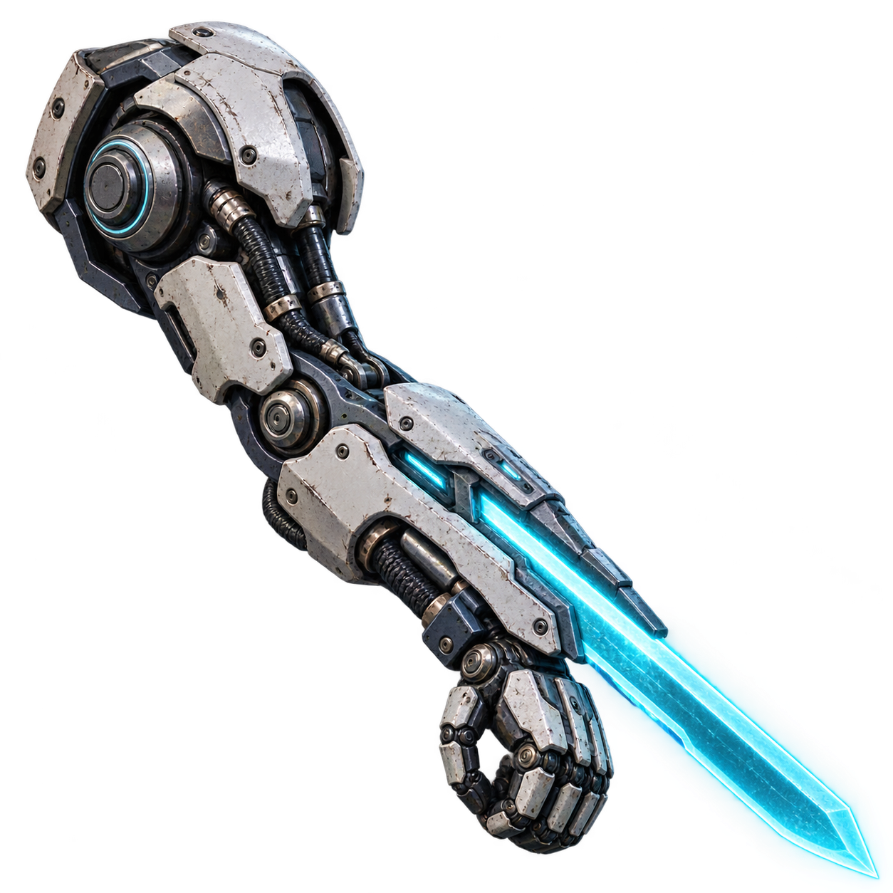
mech-arm-swordart/mechs/parts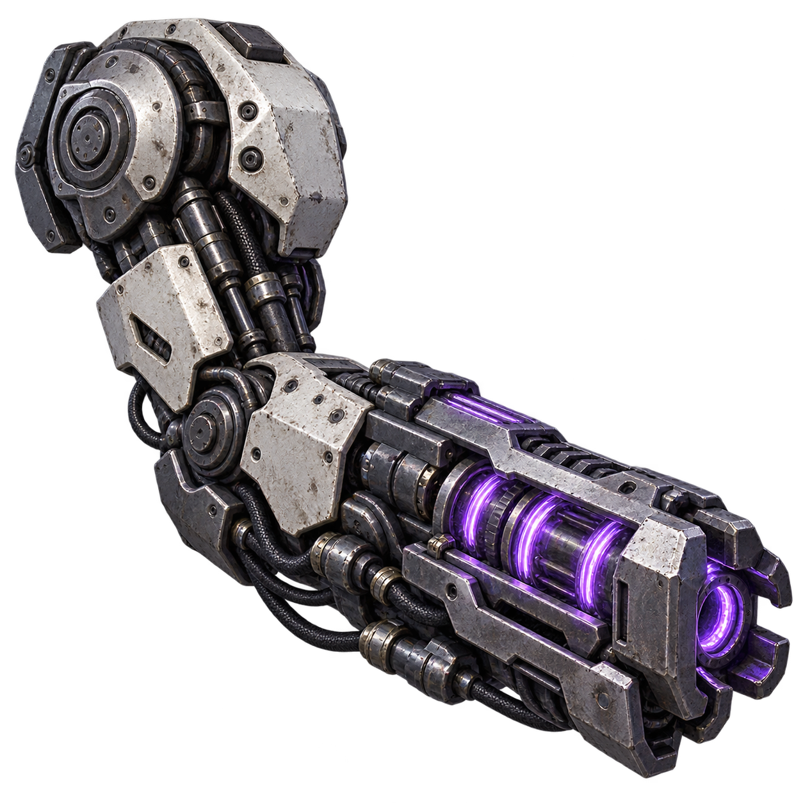
mech-arm-experimentalart/mechs/partsПромпт из манифеста
Use case: stylized-concept. ONE isolated spaceship equipment inventory icon for a semi-realistic space RPG. 1024x1024 square, genuinely transparent alpha background, no painted checkerboard. Detailed industrial game asset, worn pale steel armor panels, blue-gray gunmetal structure, dark recesses, exposed bolts and hoses, restrained luminous accent. Elevated three-quarter product view showing top, front and side, crisp chunky readable silhouette at small sizes, soft studio illumination from upper left, no cast shadow outside object. Center entire item with clear padding, no cropped parts. No text, labels, letters, numbers, watermark, UI border, people, ship, room, floor or extra separate objects. This is a walking combat mech part, not a spaceship part. ONE complete mechanical arm with large experimental gun and luminous violet magnetic coils.
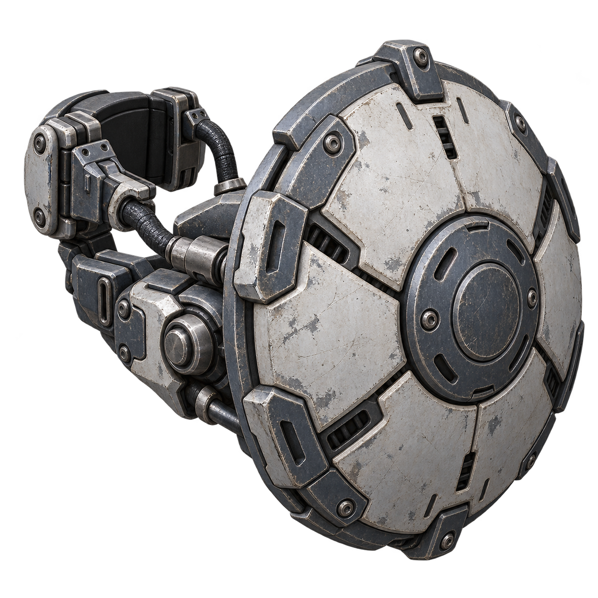
mech-shield-lightart/mechs/partsПромпт из манифеста
Use case: stylized-concept. ONE isolated spaceship equipment inventory icon for a semi-realistic space RPG. 1024x1024 square, genuinely transparent alpha background, no painted checkerboard. Detailed industrial game asset, worn pale steel armor panels, blue-gray gunmetal structure, dark recesses, exposed bolts and hoses, restrained luminous accent. Elevated three-quarter product view showing top, front and side, crisp chunky readable silhouette at small sizes, soft studio illumination from upper left, no cast shadow outside object. Center entire item with clear padding, no cropped parts. No text, labels, letters, numbers, watermark, UI border, people, ship, room, floor or extra separate objects. This is a walking combat mech part, not a spaceship part. Compact round armored shield with attached mech forearm mounting hardware.
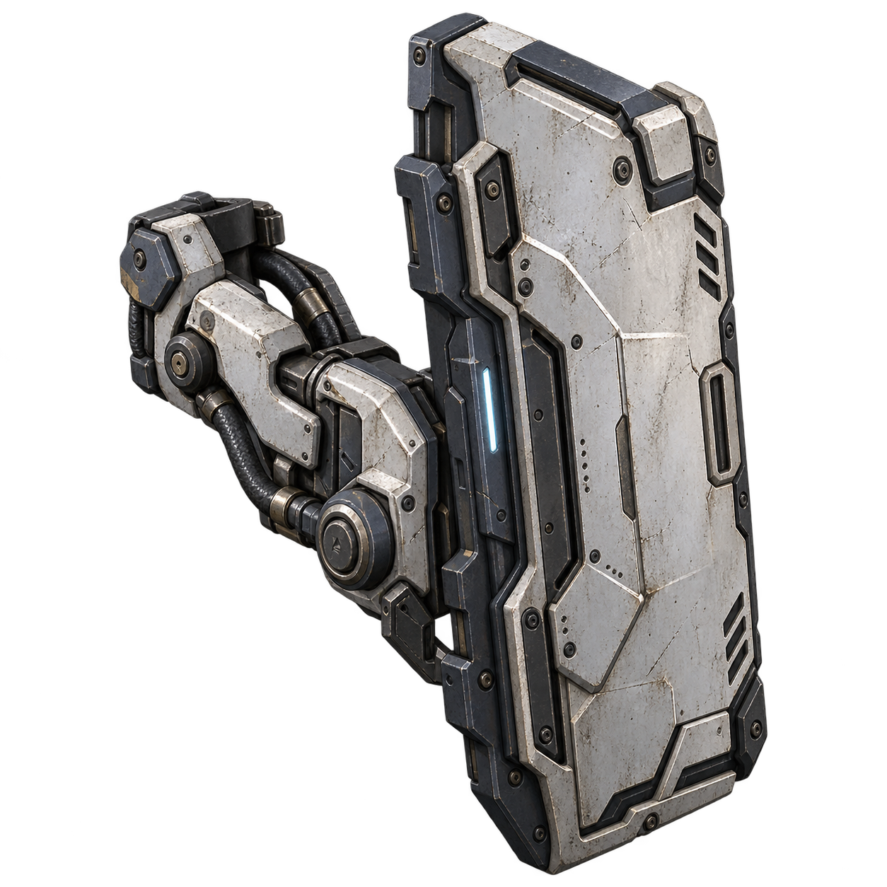
mech-shield-heavyart/mechs/partsПромпт из манифеста
Use case: stylized-concept. ONE isolated spaceship equipment inventory icon for a semi-realistic space RPG. 1024x1024 square, genuinely transparent alpha background, no painted checkerboard. Detailed industrial game asset, worn pale steel armor panels, blue-gray gunmetal structure, dark recesses, exposed bolts and hoses, restrained luminous accent. Elevated three-quarter product view showing top, front and side, crisp chunky readable silhouette at small sizes, soft studio illumination from upper left, no cast shadow outside object. Center entire item with clear padding, no cropped parts. No text, labels, letters, numbers, watermark, UI border, people, ship, room, floor or extra separate objects. This is a walking combat mech part, not a spaceship part. Large full-height rectangular slab shield with reinforced mech forearm mount.
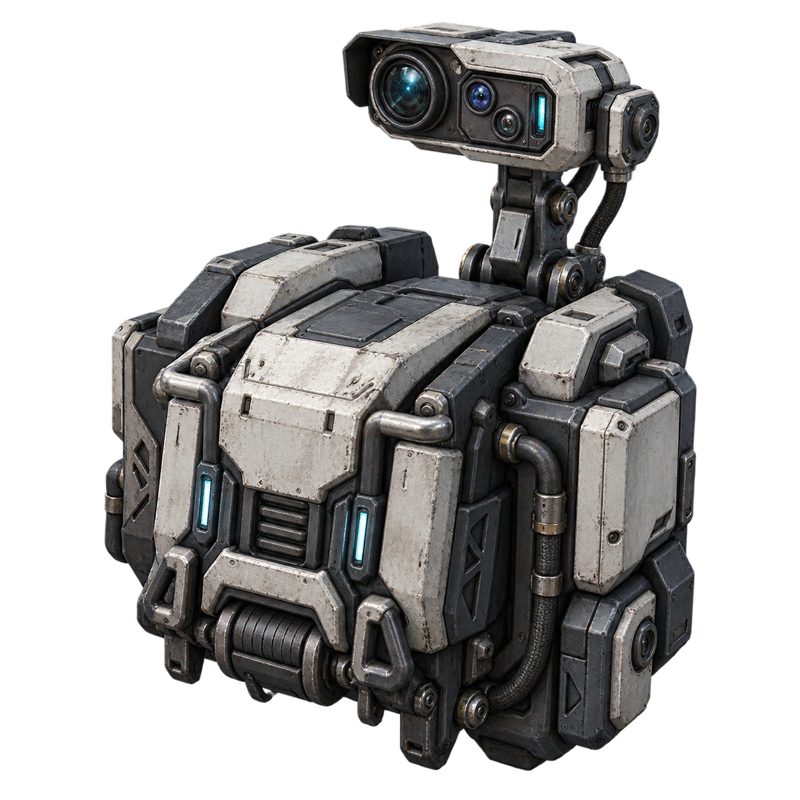
mech-pack-accuracyart/mechs/partsПромпт из манифеста
Use case: stylized-concept. ONE isolated spaceship equipment inventory icon for a semi-realistic space RPG. 1024x1024 square, genuinely transparent alpha background, no painted checkerboard. Detailed industrial game asset, worn pale steel armor panels, blue-gray gunmetal structure, dark recesses, exposed bolts and hoses, restrained luminous accent. Elevated three-quarter product view showing top, front and side, crisp chunky readable silhouette at small sizes, soft studio illumination from upper left, no cast shadow outside object. Center entire item with clear padding, no cropped parts. No text, labels, letters, numbers, watermark, UI border, people, ship, room, floor or extra separate objects. This is a walking combat mech part, not a spaceship part. Mech backpack with a folding sensor mast and precise optical arrays.
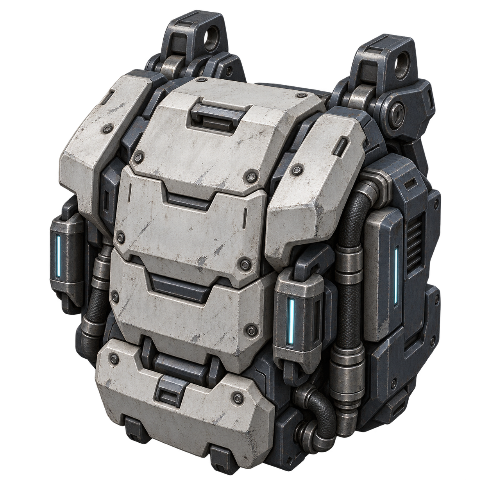
mech-pack-armorart/mechs/partsПромпт из манифеста
Use case: stylized-concept. ONE isolated spaceship equipment inventory icon for a semi-realistic space RPG. 1024x1024 square, genuinely transparent alpha background, no painted checkerboard. Detailed industrial game asset, worn pale steel armor panels, blue-gray gunmetal structure, dark recesses, exposed bolts and hoses, restrained luminous accent. Elevated three-quarter product view showing top, front and side, crisp chunky readable silhouette at small sizes, soft studio illumination from upper left, no cast shadow outside object. Center entire item with clear padding, no cropped parts. No text, labels, letters, numbers, watermark, UI border, people, ship, room, floor or extra separate objects. This is a walking combat mech part, not a spaceship part. Mech backpack consisting of stacked additional thick armor plates and rear mounting connectors.
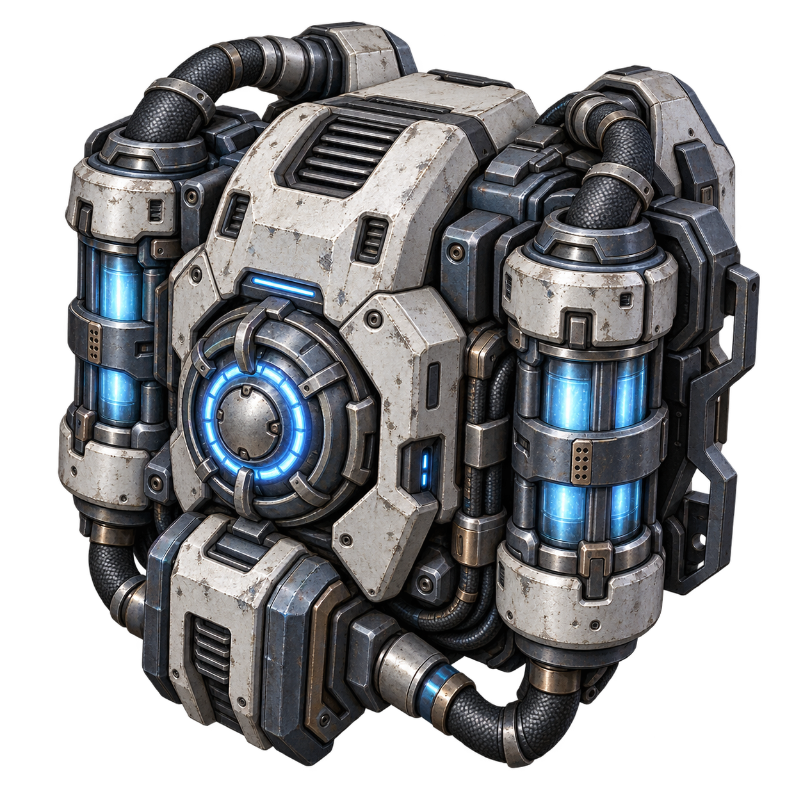
mech-pack-damageart/mechs/partsПромпт из манифеста
Use case: stylized-concept. ONE isolated spaceship equipment inventory icon for a semi-realistic space RPG. 1024x1024 square, genuinely transparent alpha background, no painted checkerboard. Detailed industrial game asset, worn pale steel armor panels, blue-gray gunmetal structure, dark recesses, exposed bolts and hoses, restrained luminous accent. Elevated three-quarter product view showing top, front and side, crisp chunky readable silhouette at small sizes, soft studio illumination from upper left, no cast shadow outside object. Center entire item with clear padding, no cropped parts. No text, labels, letters, numbers, watermark, UI border, people, ship, room, floor or extra separate objects. This is a walking combat mech part, not a spaceship part. Mech backpack power plant with visible capacitors and armored cables.
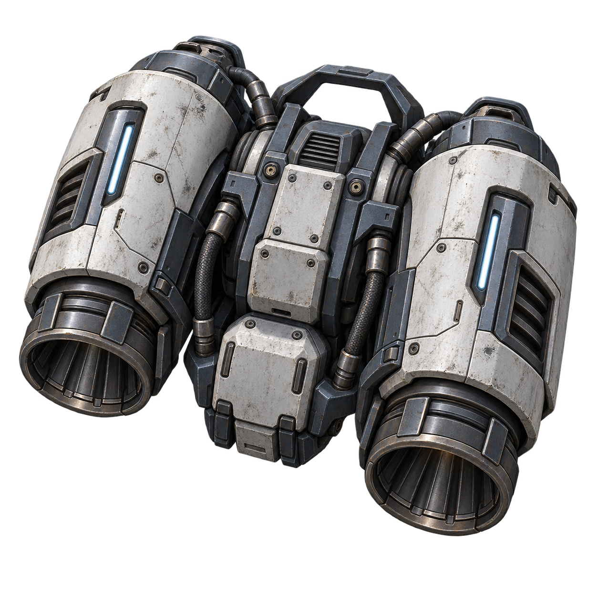
mech-pack-mobilityart/mechs/partsПромпт из манифеста
Use case: stylized-concept. ONE isolated spaceship equipment inventory icon for a semi-realistic space RPG. 1024x1024 square, genuinely transparent alpha background, no painted checkerboard. Detailed industrial game asset, worn pale steel armor panels, blue-gray gunmetal structure, dark recesses, exposed bolts and hoses, restrained luminous accent. Elevated three-quarter product view showing top, front and side, crisp chunky readable silhouette at small sizes, soft studio illumination from upper left, no cast shadow outside object. Center entire item with clear padding, no cropped parts. No text, labels, letters, numbers, watermark, UI border, people, ship, room, floor or extra separate objects. This is a walking combat mech part, not a spaceship part. Mech backpack with paired jump thrusters, no flames.
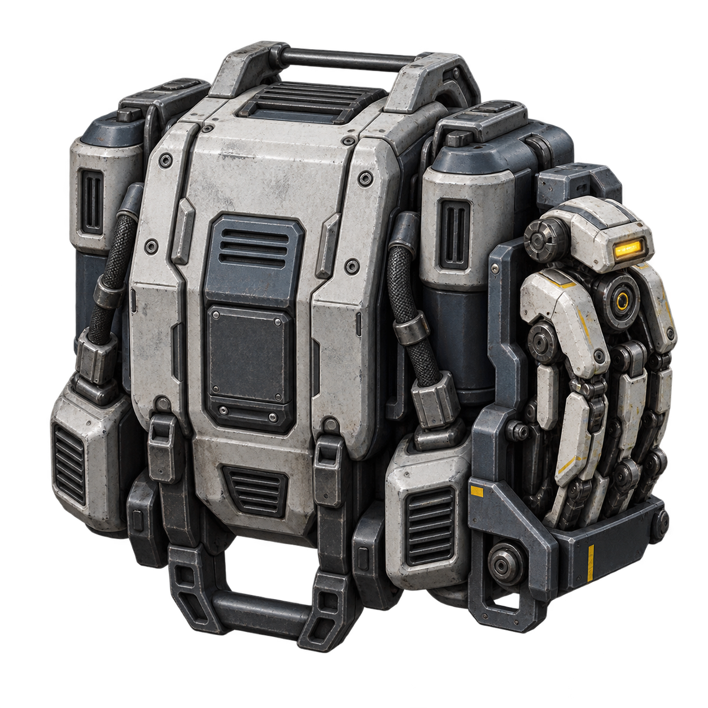
mech-pack-repairart/mechs/partsПромпт из манифеста
Use case: stylized-concept. ONE isolated spaceship equipment inventory icon for a semi-realistic space RPG. 1024x1024 square, genuinely transparent alpha background, no painted checkerboard. Detailed industrial game asset, worn pale steel armor panels, blue-gray gunmetal structure, dark recesses, exposed bolts and hoses, restrained luminous accent. Elevated three-quarter product view showing top, front and side, crisp chunky readable silhouette at small sizes, soft studio illumination from upper left, no cast shadow outside object. Center entire item with clear padding, no cropped parts. No text, labels, letters, numbers, watermark, UI border, people, ship, room, floor or extra separate objects. This is a walking combat mech part, not a spaceship part. Mech backpack with one compact folded repair drone held on an integrated docking bracket.
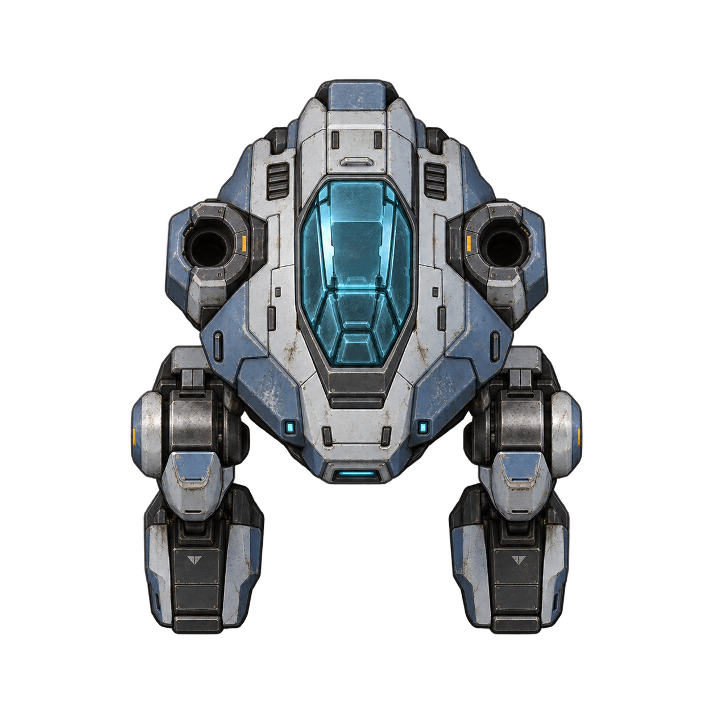
mech-unit-lightart/mechs/unitsПромпт из манифеста
Use case: stylized-concept. ONE isolated combat mech unit sprite for a top-down turn-based tactics game, 1024x1024 canvas with genuinely TRANSPARENT alpha background. STRICT ORTHOGRAPHIC 90-degree overhead view, front of the mech facing exact TOP of image, no perspective or isometric tilt, centered with 10% padding. Detailed semi-realistic industrial art matching worn blue-gray spaceships: pale steel armor plates, gunmetal joints, dark recesses, small cyan sensor lights and amber indicators, soft upper-left illumination, no cast shadow outside silhouette. Crisp readable silhouette at 64 px. No text, numbers, logo, ground, frame or watermark. Compact light torso with big cyan cockpit canopy on two slender reverse-jointed legs. Torso PLUS legs only. Absolutely NO arms, weapons or shields, empty shoulder sockets for code-composited separate arm layers. Orthographic bird's eye view shows top surfaces only, not frontal portrait, no horizon. Player units blue-gray; enemies rust-red/black.
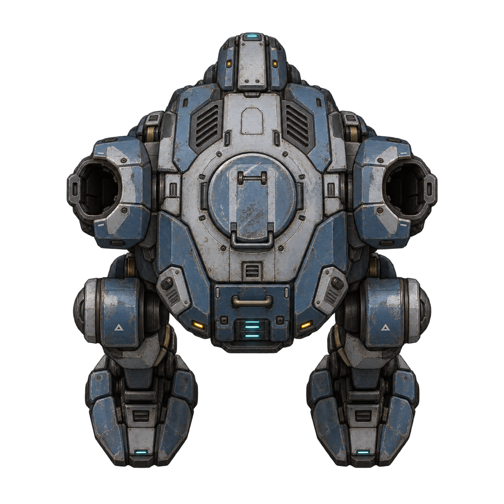
mech-unit-mediumart/mechs/unitsПромпт из манифеста
Use case: stylized-concept. ONE isolated combat mech unit sprite for a top-down turn-based tactics game, 1024x1024 canvas with genuinely TRANSPARENT alpha background. STRICT ORTHOGRAPHIC 90-degree overhead view, front of the mech facing exact TOP of image, no perspective or isometric tilt, centered with 10% padding. Detailed semi-realistic industrial art matching worn blue-gray spaceships: pale steel armor plates, gunmetal joints, dark recesses, small cyan sensor lights and amber indicators, soft upper-left illumination, no cast shadow outside silhouette. Crisp readable silhouette at 64 px. No text, numbers, logo, ground, frame or watermark. Balanced medium armored torso on two sturdy mechanical legs. Torso PLUS legs only. Absolutely NO arms, weapons or shields, empty shoulder sockets for code-composited separate arm layers. Orthographic bird's eye view shows top surfaces only, not frontal portrait, no horizon. Player units blue-gray; enemies rust-red/black.
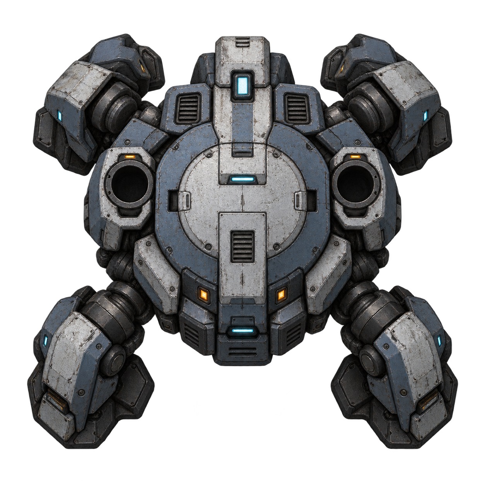
mech-unit-heavyart/mechs/unitsПромпт из манифеста
Use case: stylized-concept. ONE isolated combat mech unit sprite for a top-down turn-based tactics game, 1024x1024 canvas with genuinely TRANSPARENT alpha background. STRICT ORTHOGRAPHIC 90-degree overhead view, front of the mech facing exact TOP of image, no perspective or isometric tilt, centered with 10% padding. Detailed semi-realistic industrial art matching worn blue-gray spaceships: pale steel armor plates, gunmetal joints, dark recesses, small cyan sensor lights and amber indicators, soft upper-left illumination, no cast shadow outside silhouette. Crisp readable silhouette at 64 px. No text, numbers, logo, ground, frame or watermark. Massive bunker torso on FOUR thick spider-like legs. Torso PLUS legs only. Absolutely NO arms, weapons or shields, empty shoulder sockets for code-composited separate arm layers. Orthographic bird's eye view shows top surfaces only, not frontal portrait, no horizon. Player units blue-gray; enemies rust-red/black.
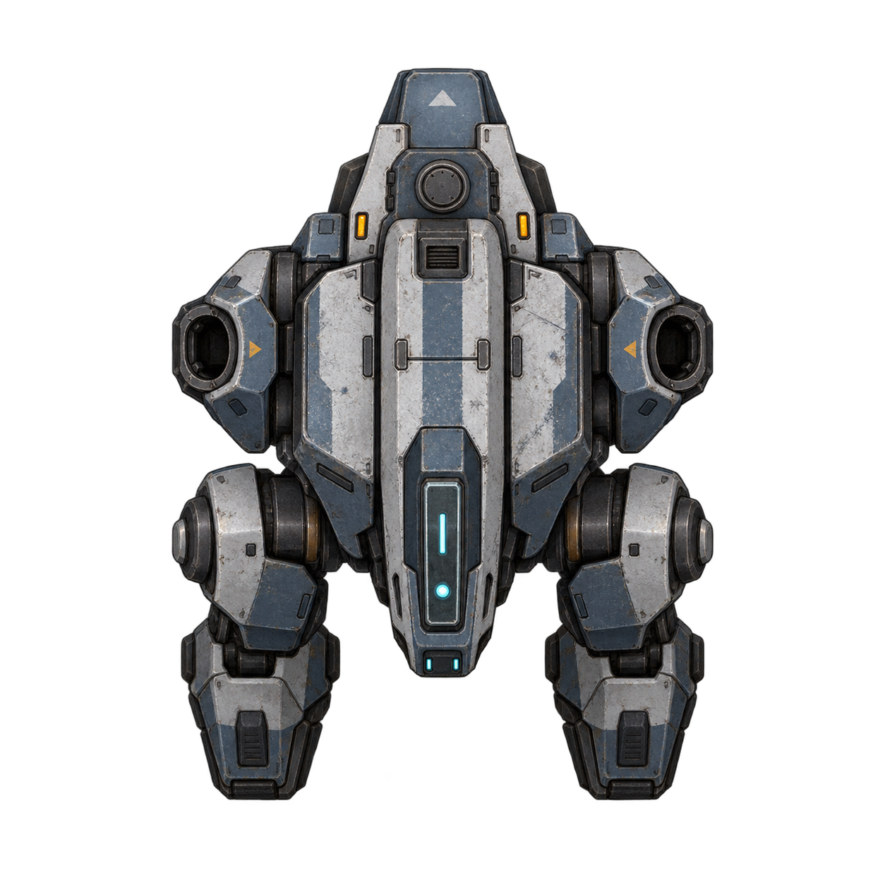
mech-unit-sniperart/mechs/unitsПромпт из манифеста
Use case: stylized-concept. ONE isolated combat mech unit sprite for a top-down turn-based tactics game, 1024x1024 canvas with genuinely TRANSPARENT alpha background. STRICT ORTHOGRAPHIC 90-degree overhead view, front of the mech facing exact TOP of image, no perspective or isometric tilt, centered with 10% padding. Detailed semi-realistic industrial art matching worn blue-gray spaceships: pale steel armor plates, gunmetal joints, dark recesses, small cyan sensor lights and amber indicators, soft upper-left illumination, no cast shadow outside silhouette. Crisp readable silhouette at 64 px. No text, numbers, logo, ground, frame or watermark. Narrow torso with long forward sensor block on two slim stable legs. Torso PLUS legs only. Absolutely NO arms, weapons or shields, empty shoulder sockets for code-composited separate arm layers. Orthographic bird's eye view shows top surfaces only, not frontal portrait, no horizon. Player units blue-gray; enemies rust-red/black.
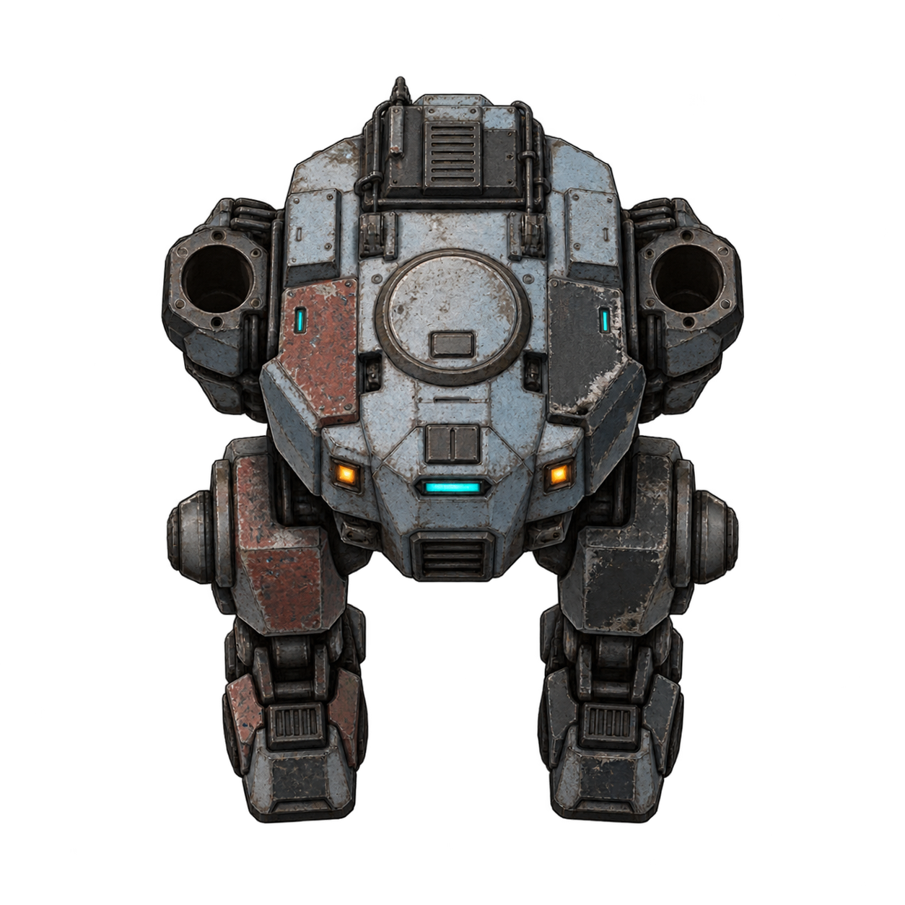
mech-unit-enemy-banditart/mechs/unitsПромпт из манифеста
Use case: stylized-concept. ONE isolated combat mech unit sprite for a top-down turn-based tactics game, 1024x1024 canvas with genuinely TRANSPARENT alpha background. STRICT ORTHOGRAPHIC 90-degree overhead view, front of the mech facing exact TOP of image, no perspective or isometric tilt, centered with 10% padding. Detailed semi-realistic industrial art matching worn blue-gray spaceships: pale steel armor plates, gunmetal joints, dark recesses, small cyan sensor lights and amber indicators, soft upper-left illumination, no cast shadow outside silhouette. Crisp readable silhouette at 64 px. No text, numbers, logo, ground, frame or watermark. Light scavenged torso on mismatched reverse-jointed legs, patched rust-red and soot-black armor. Torso PLUS legs only. Absolutely NO arms, weapons or shields, empty shoulder sockets for code-composited separate arm layers. Orthographic bird's eye view shows top surfaces only, not frontal portrait, no horizon. Player units blue-gray; enemies rust-red/black.
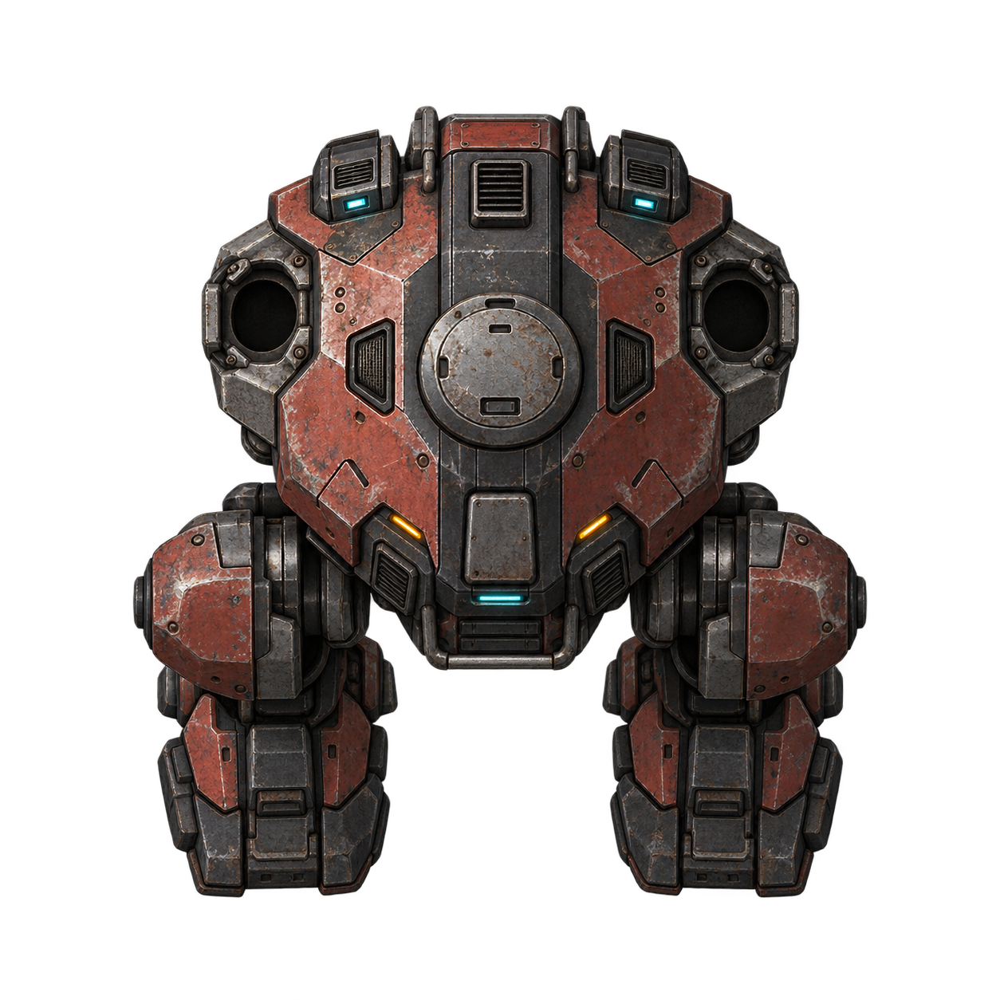
mech-unit-enemy-militiaart/mechs/unitsПромпт из манифеста
Use case: stylized-concept. ONE isolated combat mech unit sprite for a top-down turn-based tactics game, 1024x1024 canvas with genuinely TRANSPARENT alpha background. STRICT ORTHOGRAPHIC 90-degree overhead view, front of the mech facing exact TOP of image, no perspective or isometric tilt, centered with 10% padding. Detailed semi-realistic industrial art matching worn blue-gray spaceships: pale steel armor plates, gunmetal joints, dark recesses, small cyan sensor lights and amber indicators, soft upper-left illumination, no cast shadow outside silhouette. Crisp readable silhouette at 64 px. No text, numbers, logo, ground, frame or watermark. Medium utilitarian torso on two heavy legs, scavenged rust-red and black armor. Torso PLUS legs only. Absolutely NO arms, weapons or shields, empty shoulder sockets for code-composited separate arm layers. Orthographic bird's eye view shows top surfaces only, not frontal portrait, no horizon. Player units blue-gray; enemies rust-red/black.
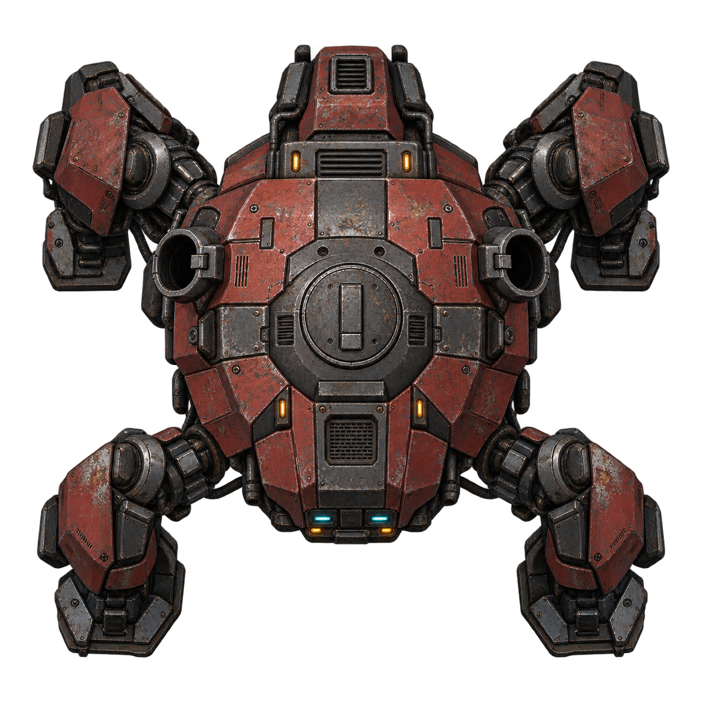
mech-unit-enemy-heavyart/mechs/unitsПромпт из манифеста
Use case: stylized-concept. ONE isolated combat mech unit sprite for a top-down turn-based tactics game, 1024x1024 canvas with genuinely TRANSPARENT alpha background. STRICT ORTHOGRAPHIC 90-degree overhead view, front of the mech facing exact TOP of image, no perspective or isometric tilt, centered with 10% padding. Detailed semi-realistic industrial art matching worn blue-gray spaceships: pale steel armor plates, gunmetal joints, dark recesses, small cyan sensor lights and amber indicators, soft upper-left illumination, no cast shadow outside silhouette. Crisp readable silhouette at 64 px. No text, numbers, logo, ground, frame or watermark. Huge reinforced salvaged torso on four heavy spider legs, rust-red and black welded plates. Torso PLUS legs only. Absolutely NO arms, weapons or shields, empty shoulder sockets for code-composited separate arm layers. Orthographic bird's eye view shows top surfaces only, not frontal portrait, no horizon. Player units blue-gray; enemies rust-red/black.
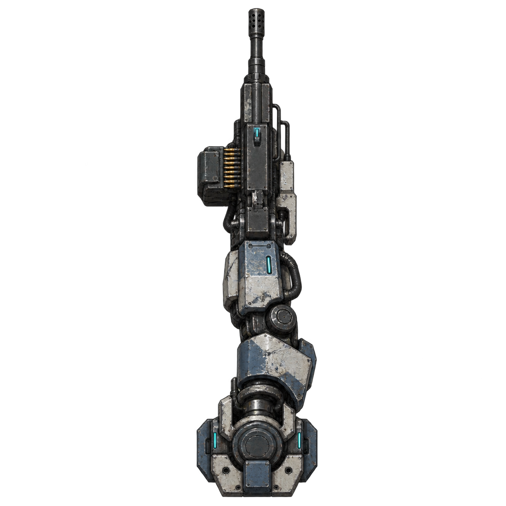
mech-arm-layer-mgart/mechs/arm-layersПромпт из манифеста
Use case: stylized-concept. ONE separate combat mech weapon-arm layer, 512x512, genuinely transparent alpha. Strict 90-degree overhead orthographic view, barrel or blade points straight UP. ONE complete articulated mechanical arm with integrated light machine gun. Worn pale steel and blue-gray armor, dark joints, cyan sensor accents. Shoulder attachment at x50% y78%, weapon extends toward top, 10% empty margins. Single arm only, NO torso, legs, other arm, floor, shadow, labels, firing effects. Match top-down industrial mech sprites, soft upper-left lighting. All layers use same camera and anchor.
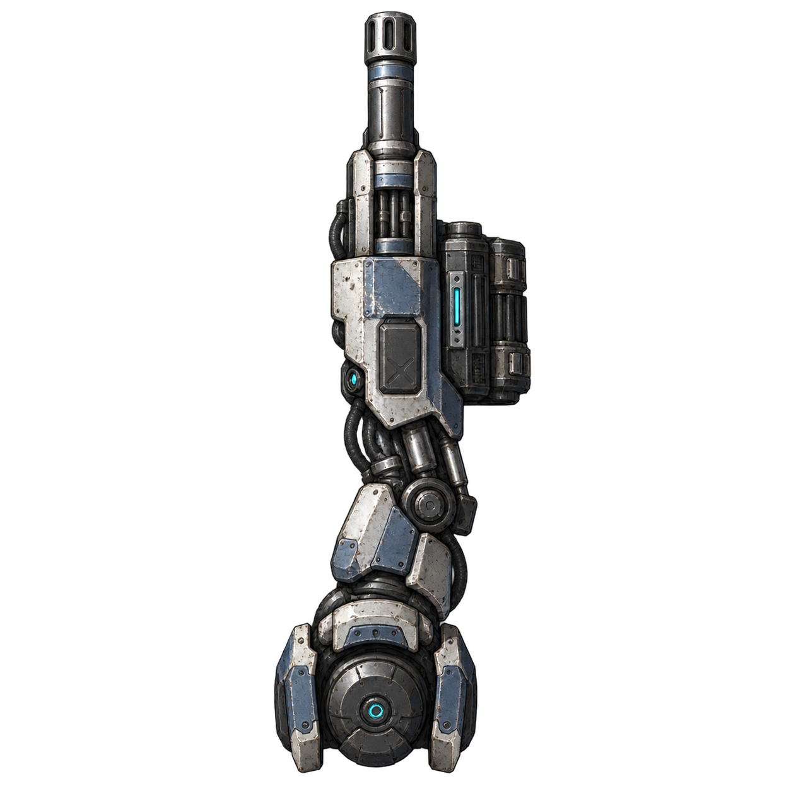
mech-arm-layer-cannonart/mechs/arm-layersПромпт из манифеста
Use case: stylized-concept. ONE separate combat mech weapon-arm layer, 512x512, genuinely transparent alpha. Strict 90-degree overhead orthographic view, barrel or blade points straight UP. ONE complete reinforced mechanical arm with integrated heavy cannon. Worn pale steel and blue-gray armor, dark joints, cyan sensor accents. Shoulder attachment at x50% y78%, weapon extends toward top, 10% empty margins. Single arm only, NO torso, legs, other arm, floor, shadow, labels, firing effects. Match top-down industrial mech sprites, soft upper-left lighting. All layers use same camera and anchor.
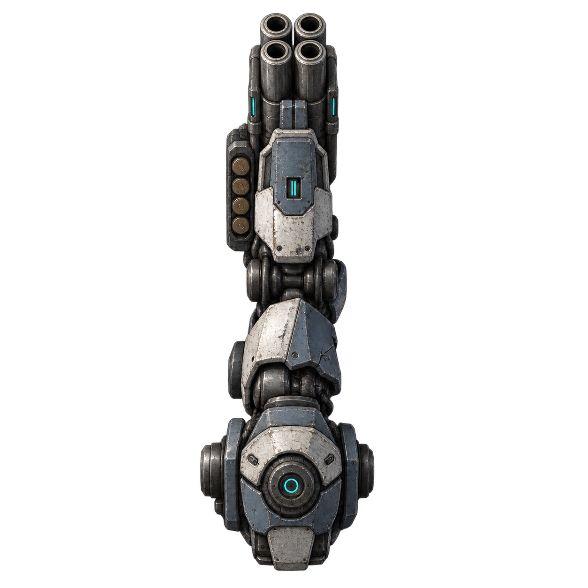
mech-arm-layer-shotgunart/mechs/arm-layersПромпт из манифеста
Use case: stylized-concept. ONE separate combat mech weapon-arm layer, 512x512, genuinely transparent alpha. Strict 90-degree overhead orthographic view, barrel or blade points straight UP. ONE complete mechanical arm with short thick multi-bore shotgun. Worn pale steel and blue-gray armor, dark joints, cyan sensor accents. Shoulder attachment at x50% y78%, weapon extends toward top, 10% empty margins. Single arm only, NO torso, legs, other arm, floor, shadow, labels, firing effects. Match top-down industrial mech sprites, soft upper-left lighting. All layers use same camera and anchor.
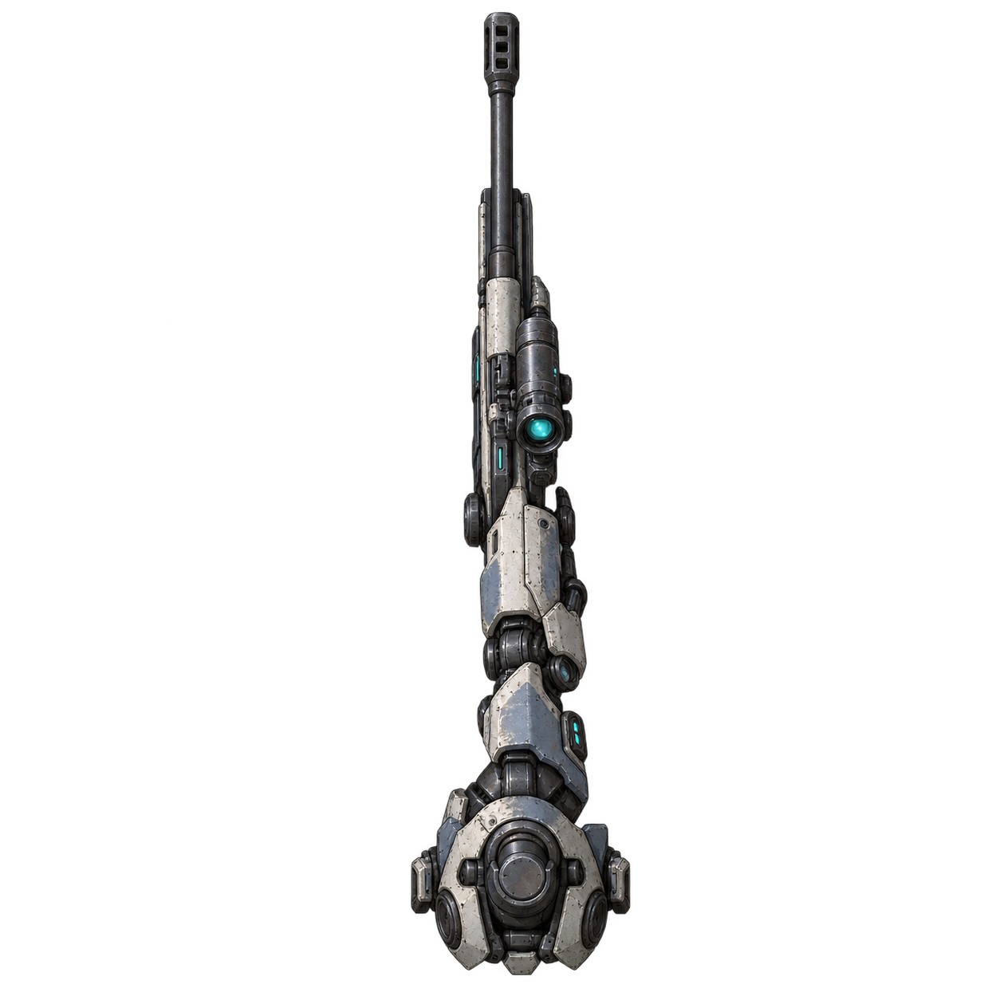
mech-arm-layer-rifleart/mechs/arm-layersПромпт из манифеста
Use case: stylized-concept. ONE separate combat mech weapon-arm layer, 512x512, genuinely transparent alpha. Strict 90-degree overhead orthographic view, barrel or blade points straight UP. ONE complete slim mechanical arm with integrated long sniper rifle and sensor scope. Worn pale steel and blue-gray armor, dark joints, cyan sensor accents. Shoulder attachment at x50% y78%, weapon extends toward top, 10% empty margins. Single arm only, NO torso, legs, other arm, floor, shadow, labels, firing effects. Match top-down industrial mech sprites, soft upper-left lighting. All layers use same camera and anchor.
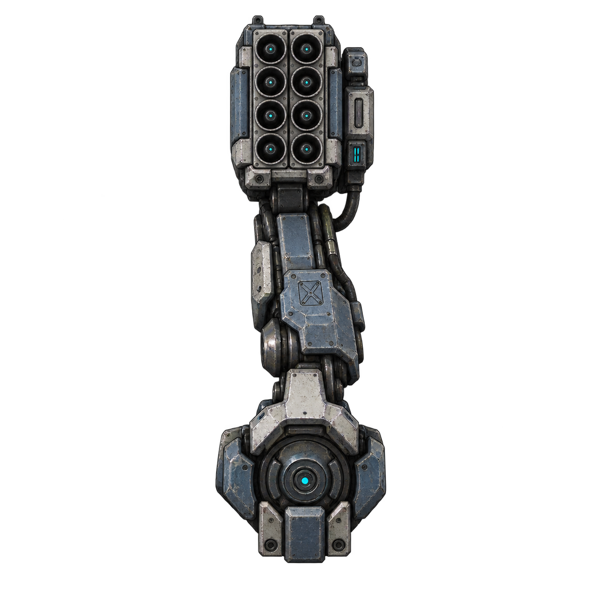
mech-arm-layer-rocketsart/mechs/arm-layersПромпт из манифеста
Use case: stylized-concept. ONE separate combat mech weapon-arm layer, 512x512, genuinely transparent alpha. Strict 90-degree overhead orthographic view, barrel or blade points straight UP. ONE complete mechanical arm with rectangular multi-tube rocket pod. Worn pale steel and blue-gray armor, dark joints, cyan sensor accents. Shoulder attachment at x50% y78%, weapon extends toward top, 10% empty margins. Single arm only, NO torso, legs, other arm, floor, shadow, labels, firing effects. Match top-down industrial mech sprites, soft upper-left lighting. All layers use same camera and anchor.
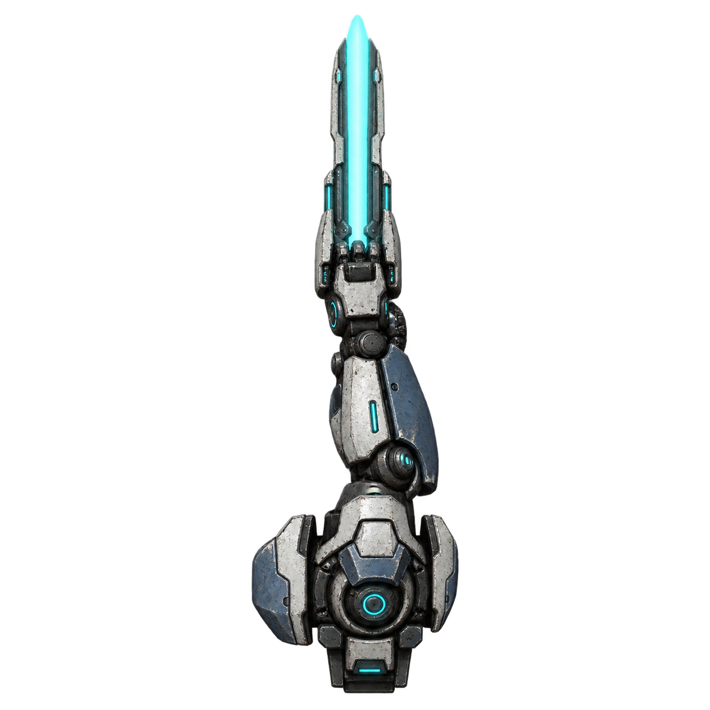
mech-arm-layer-swordart/mechs/arm-layersПромпт из манифеста
Use case: stylized-concept. ONE separate combat mech weapon-arm layer, 512x512, genuinely transparent alpha. Strict 90-degree overhead orthographic view, barrel or blade points straight UP. ONE complete mechanical arm with integrated long cyan energy blade, controlled glow. Worn pale steel and blue-gray armor, dark joints, cyan sensor accents. Shoulder attachment at x50% y78%, weapon extends toward top, 10% empty margins. Single arm only, NO torso, legs, other arm, floor, shadow, labels, firing effects. Match top-down industrial mech sprites, soft upper-left lighting. All layers use same camera and anchor.
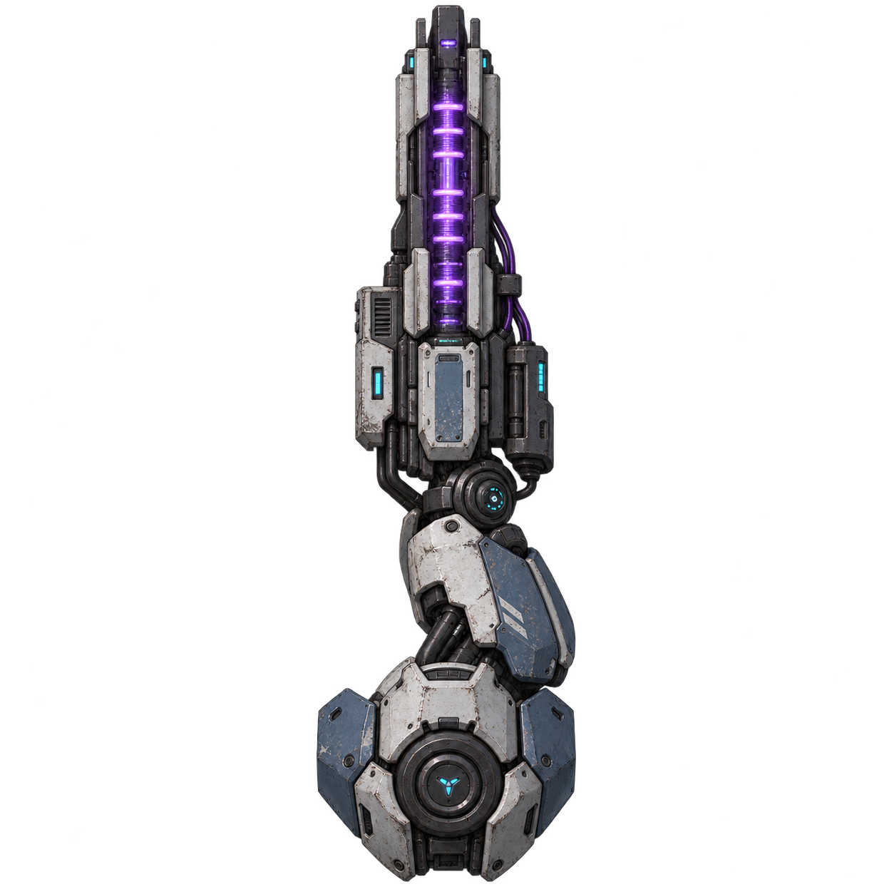
mech-arm-layer-experimentalart/mechs/arm-layersПромпт из манифеста
Use case: stylized-concept. ONE separate combat mech weapon-arm layer, 512x512, genuinely transparent alpha. Strict 90-degree overhead orthographic view, barrel or blade points straight UP. ONE complete mechanical arm with large experimental gun and luminous violet magnetic coils. Worn pale steel and blue-gray armor, dark joints, cyan sensor accents. Shoulder attachment at x50% y78%, weapon extends toward top, 10% empty margins. Single arm only, NO torso, legs, other arm, floor, shadow, labels, firing effects. Match top-down industrial mech sprites, soft upper-left lighting. All layers use same camera and anchor.
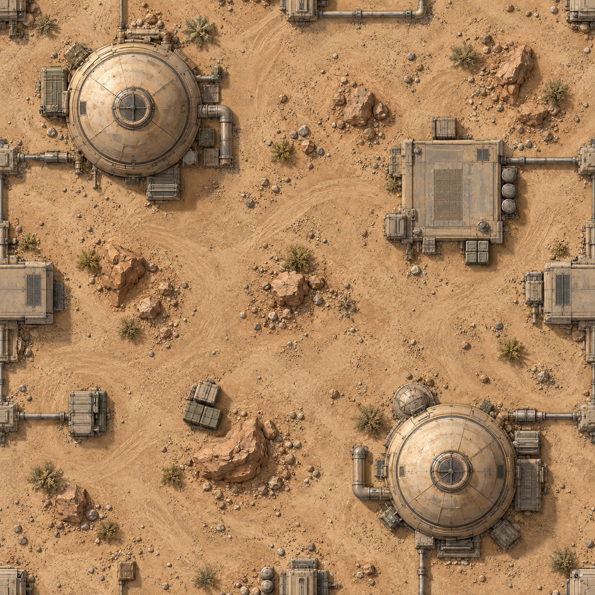
desert-ground-1art/mechs/tilesПромпт из манифеста
Use case: stylized-concept. Tactical game terrain tile, 512x512, STRICT 90-degree orthographic top-down view, NO perspective. Detailed semi-realistic industrial space RPG art, readable at small scale, no text, grid or units. Warm dusty sand, sandstone and worn sand-colored colonial metal. Flat traversable base ground with subtle low-contrast small-scale surface texture. Opaque seamless TILEABLE texture, full bleed. Left matches right and top matches bottom, same material and scale along edges, no vignette or border. Consistent soft upper-left illumination.
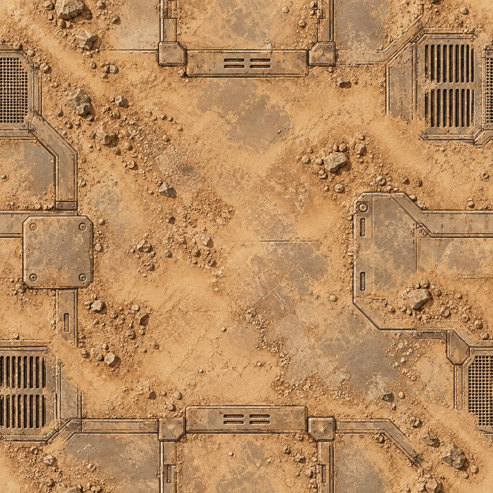
desert-ground-2art/mechs/tilesПромпт из манифеста
Use case: stylized-concept. Tactical game terrain tile, 512x512, STRICT 90-degree orthographic top-down view, NO perspective. Detailed semi-realistic industrial space RPG art, readable at small scale, no text, grid or units. Warm dusty sand, sandstone and worn sand-colored colonial metal. Second distinct variation of flat traversable base ground, same palette and texture scale, different gentle wear and seam distribution. Opaque seamless TILEABLE texture, full bleed. Left matches right and top matches bottom, same material and scale along edges, no vignette or border. Consistent soft upper-left illumination.
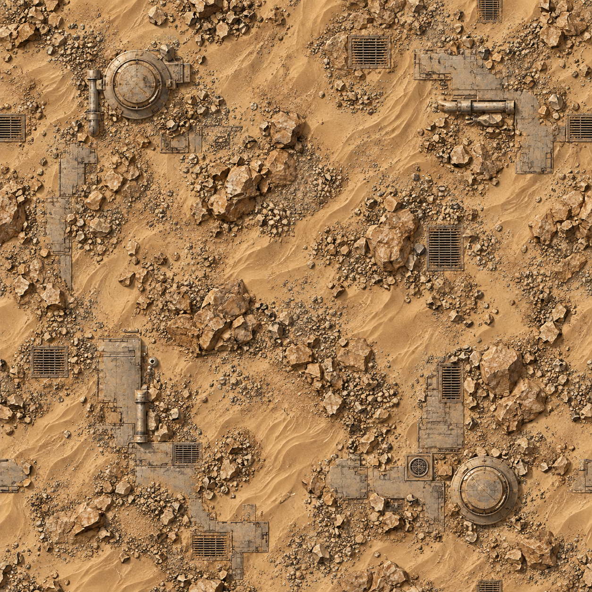
desert-roughart/mechs/tilesПромпт из манифеста
Use case: stylized-concept. Tactical game terrain tile, 512x512, STRICT 90-degree orthographic top-down view, NO perspective. Detailed semi-realistic industrial space RPG art, readable at small scale, no text, grid or units. Warm dusty sand, sandstone and worn sand-colored colonial metal. Rough difficult terrain with rubble or dense textured patches; no tall obstacles. Opaque seamless TILEABLE texture, full bleed. Left matches right and top matches bottom, same material and scale along edges, no vignette or border. Consistent soft upper-left illumination.
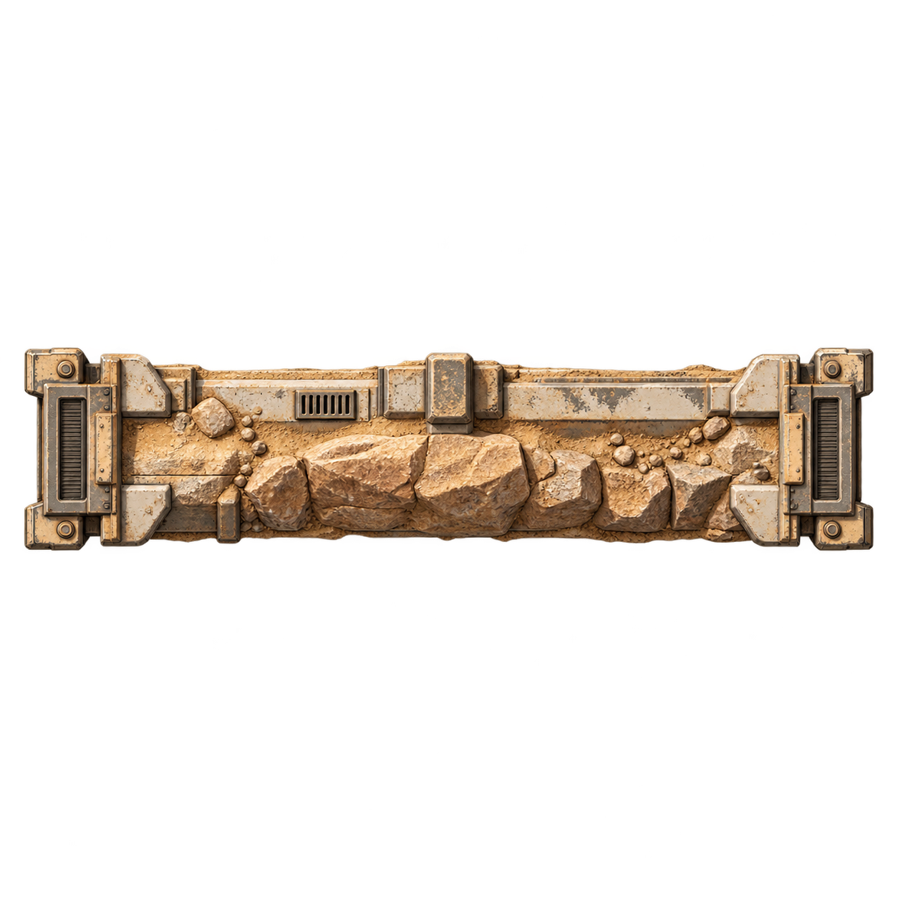
desert-wallart/mechs/tilesПромпт из манифеста
Use case: stylized-concept. Tactical game terrain tile, 512x512, STRICT 90-degree orthographic top-down view, NO perspective. Detailed semi-realistic industrial space RPG art, readable at small scale, no text, grid or units. Warm dusty sand, sandstone and worn sand-colored colonial metal. ONE isolated wall or rocky barrier segment, seen strictly from above, horizontal modular piece with straight joinable ends. Genuinely transparent alpha background. Entire isolated object visible, 8% transparent margin. Consistent soft upper-left illumination.
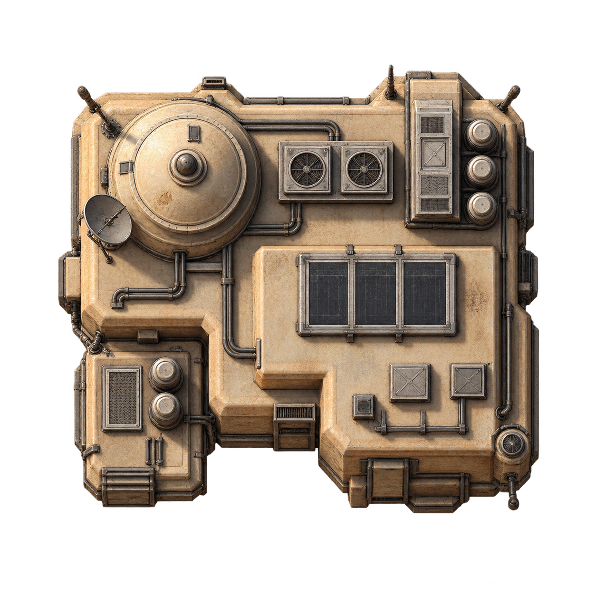
desert-buildingart/mechs/tilesПромпт из манифеста
Use case: stylized-concept. Tactical game terrain tile, 512x512, STRICT 90-degree orthographic top-down view, NO perspective. Detailed semi-realistic industrial space RPG art, readable at small scale, no text, grid or units. Warm dusty sand, sandstone and worn sand-colored colonial metal. ONE isolated compact building ROOF seen strictly from above, including tiny roof equipment; no front facade, no ground. Genuinely transparent alpha background. Entire isolated object visible, 8% transparent margin. Consistent soft upper-left illumination.
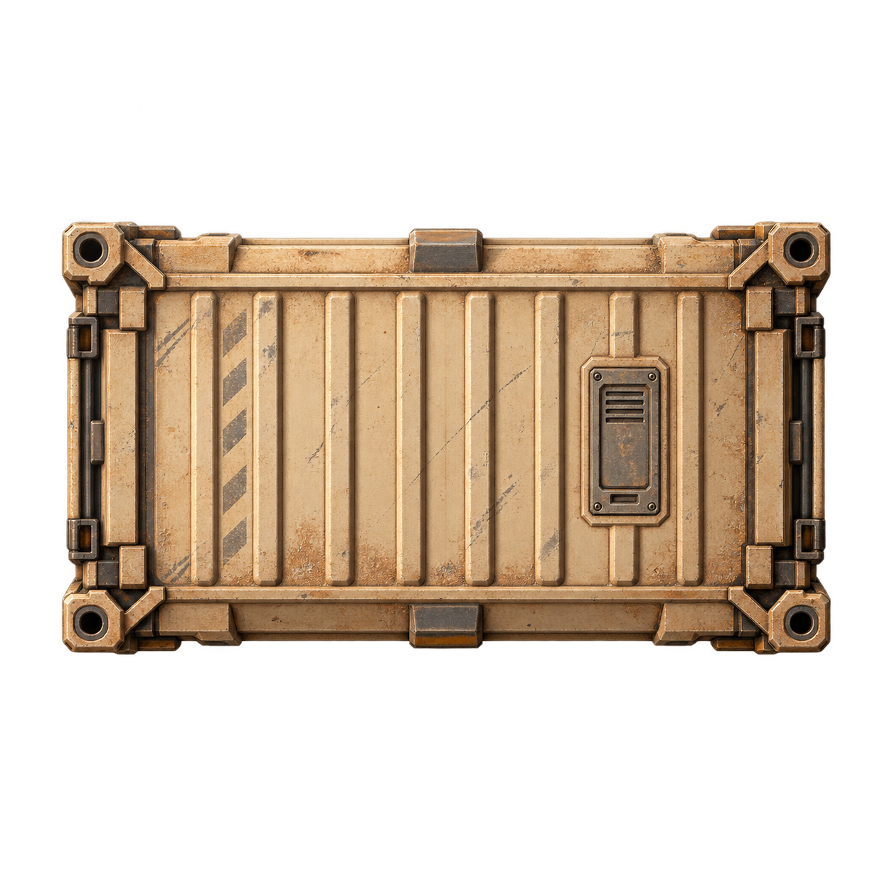
desert-crateart/mechs/tilesПромпт из манифеста
Use case: stylized-concept. Tactical game terrain tile, 512x512, STRICT 90-degree orthographic top-down view, NO perspective. Detailed semi-realistic industrial space RPG art, readable at small scale, no text, grid or units. Warm dusty sand, sandstone and worn sand-colored colonial metal. ONE isolated sturdy cargo container providing cover, strictly top view, no ground. Genuinely transparent alpha background. Entire isolated object visible, 8% transparent margin. Consistent soft upper-left illumination.
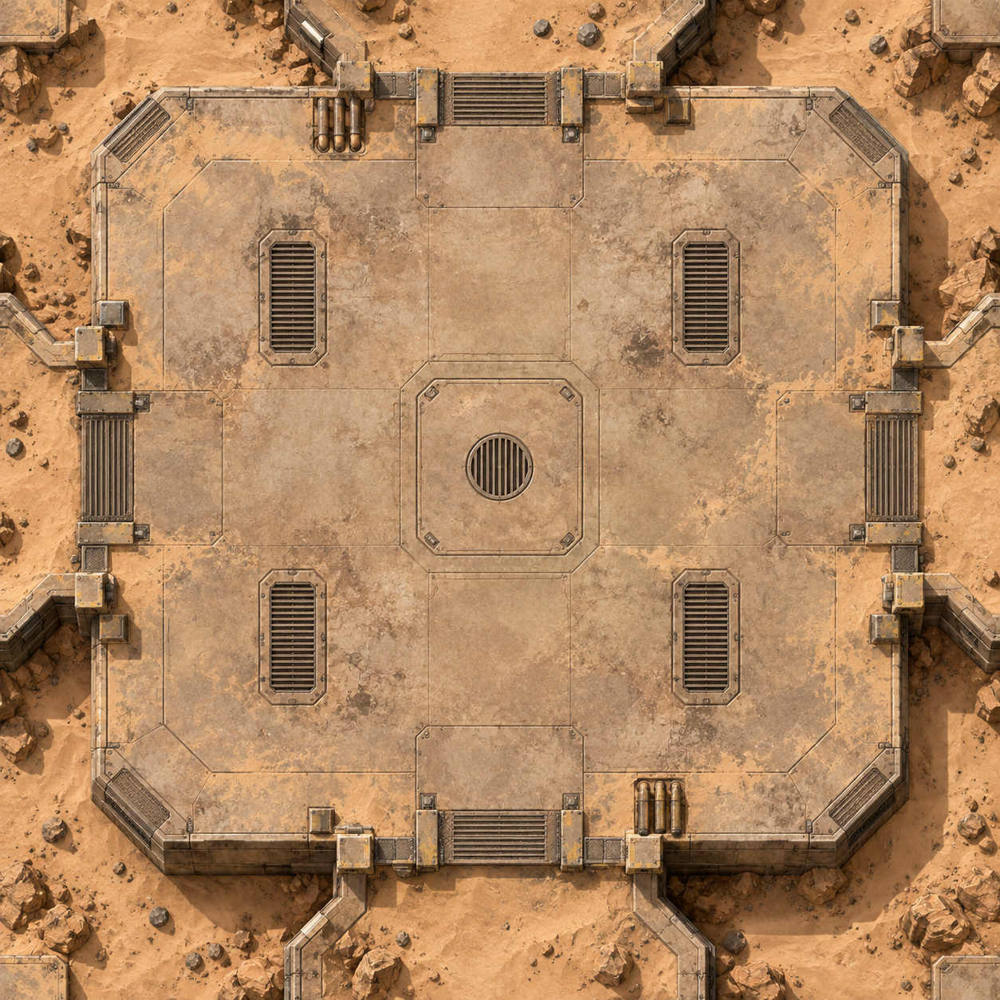
desert-high-groundart/mechs/tilesПромпт из манифеста
Use case: stylized-concept. Tactical game terrain tile, 512x512, STRICT 90-degree orthographic top-down view, NO perspective. Detailed semi-realistic industrial space RPG art, readable at small scale, no text, grid or units. Warm dusty sand, sandstone and worn sand-colored colonial metal. Raised plateau or elevated platform surface filling most tile, readable ledge with a subtle shadow along lower edge, top-down. Opaque seamless TILEABLE texture, full bleed. Left matches right and top matches bottom, same material and scale along edges, no vignette or border. Consistent soft upper-left illumination.
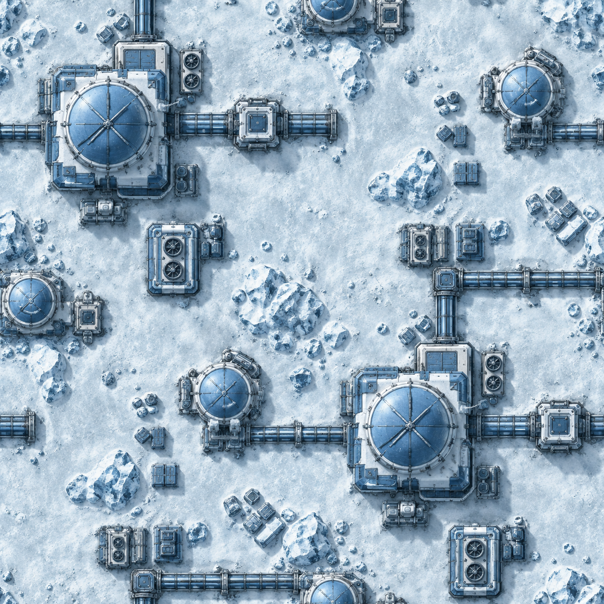
ice-ground-1art/mechs/tilesПромпт из манифеста
Use case: stylized-concept. Tactical game terrain tile, 512x512, STRICT 90-degree orthographic top-down view, NO perspective. Detailed semi-realistic industrial space RPG art, readable at small scale, no text, grid or units. Pale cyan ice, packed snow and cold blue armored habitat materials. Flat traversable base ground with subtle low-contrast small-scale surface texture. Opaque seamless TILEABLE texture, full bleed. Left matches right and top matches bottom, same material and scale along edges, no vignette or border. Consistent soft upper-left illumination.
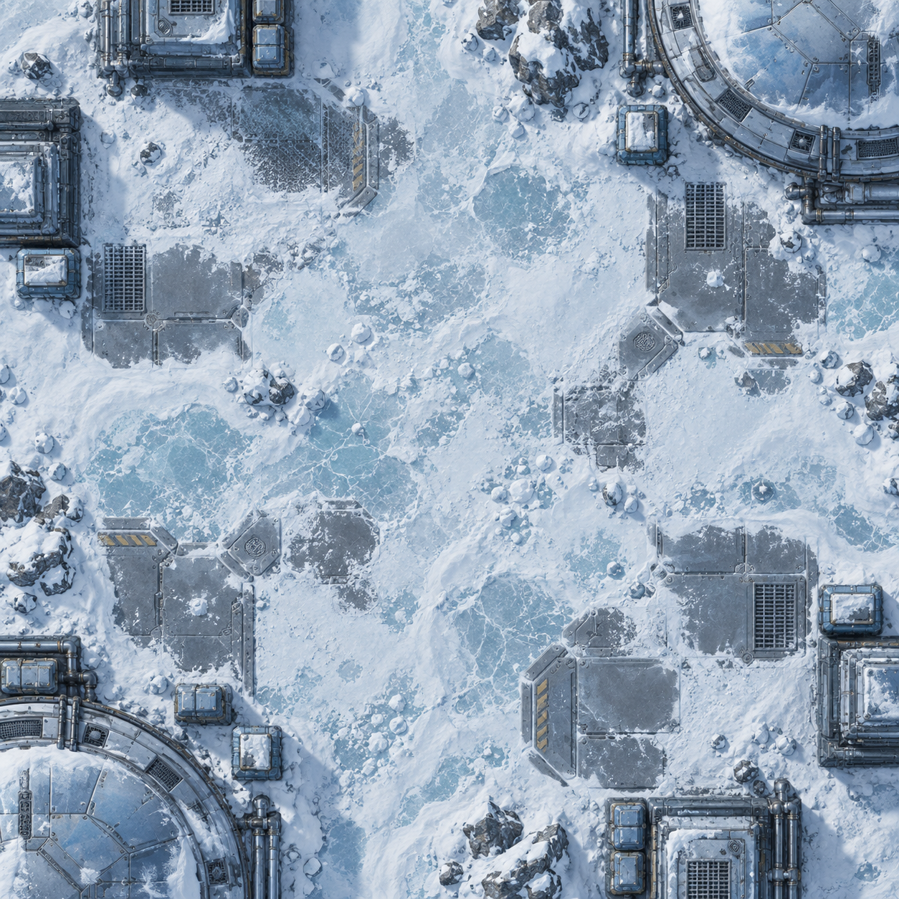
ice-ground-2art/mechs/tilesПромпт из манифеста
Use case: stylized-concept. Tactical game terrain tile, 512x512, STRICT 90-degree orthographic top-down view, NO perspective. Detailed semi-realistic industrial space RPG art, readable at small scale, no text, grid or units. Pale cyan ice, packed snow and cold blue armored habitat materials. Second distinct variation of flat traversable base ground, same palette and texture scale, different gentle wear and seam distribution. Opaque seamless TILEABLE texture, full bleed. Left matches right and top matches bottom, same material and scale along edges, no vignette or border. Consistent soft upper-left illumination.
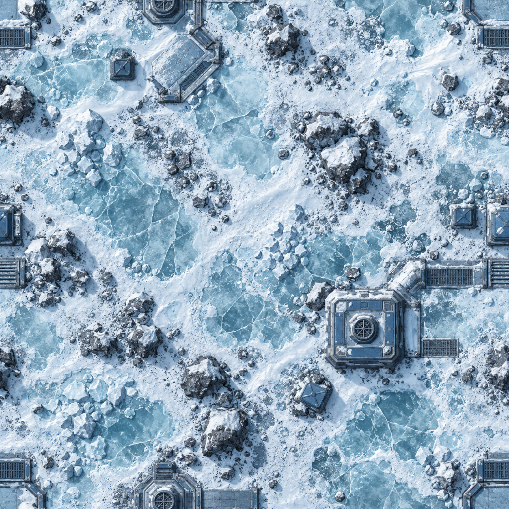
ice-roughart/mechs/tilesПромпт из манифеста
Use case: stylized-concept. Tactical game terrain tile, 512x512, STRICT 90-degree orthographic top-down view, NO perspective. Detailed semi-realistic industrial space RPG art, readable at small scale, no text, grid or units. Pale cyan ice, packed snow and cold blue armored habitat materials. Rough difficult terrain with rubble or dense textured patches; no tall obstacles. Opaque seamless TILEABLE texture, full bleed. Left matches right and top matches bottom, same material and scale along edges, no vignette or border. Consistent soft upper-left illumination.
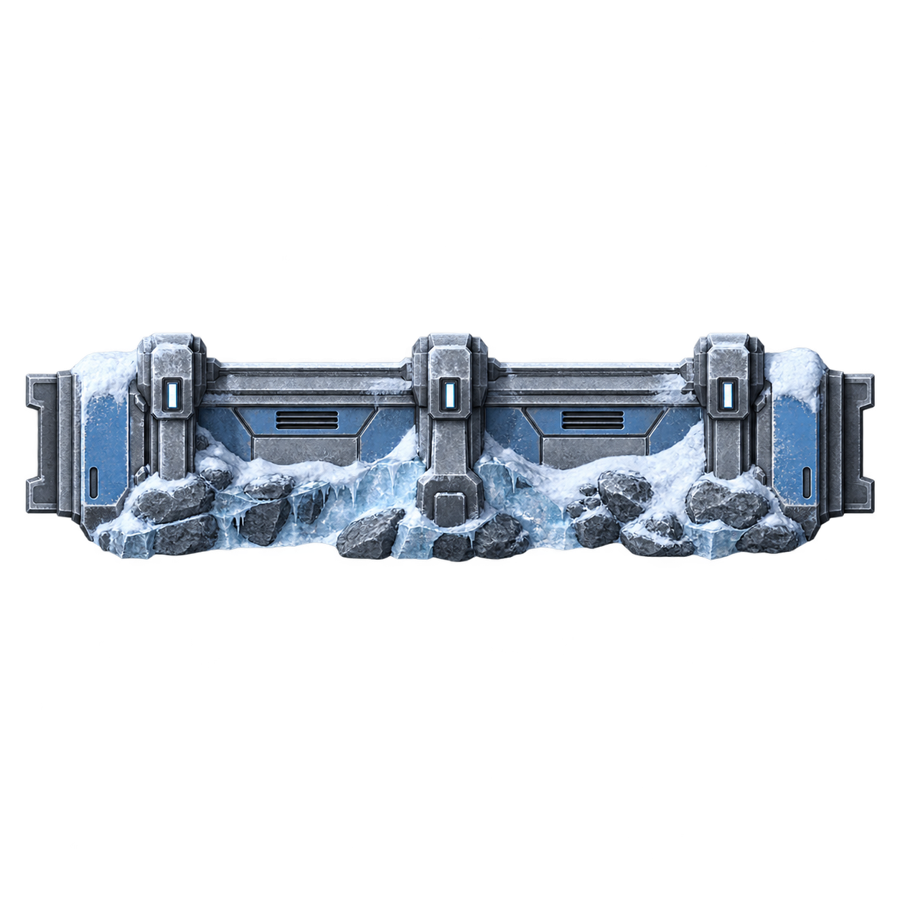
ice-wallart/mechs/tilesПромпт из манифеста
Use case: stylized-concept. Tactical game terrain tile, 512x512, STRICT 90-degree orthographic top-down view, NO perspective. Detailed semi-realistic industrial space RPG art, readable at small scale, no text, grid or units. Pale cyan ice, packed snow and cold blue armored habitat materials. ONE isolated wall or rocky barrier segment, seen strictly from above, horizontal modular piece with straight joinable ends. Genuinely transparent alpha background. Entire isolated object visible, 8% transparent margin. Consistent soft upper-left illumination.
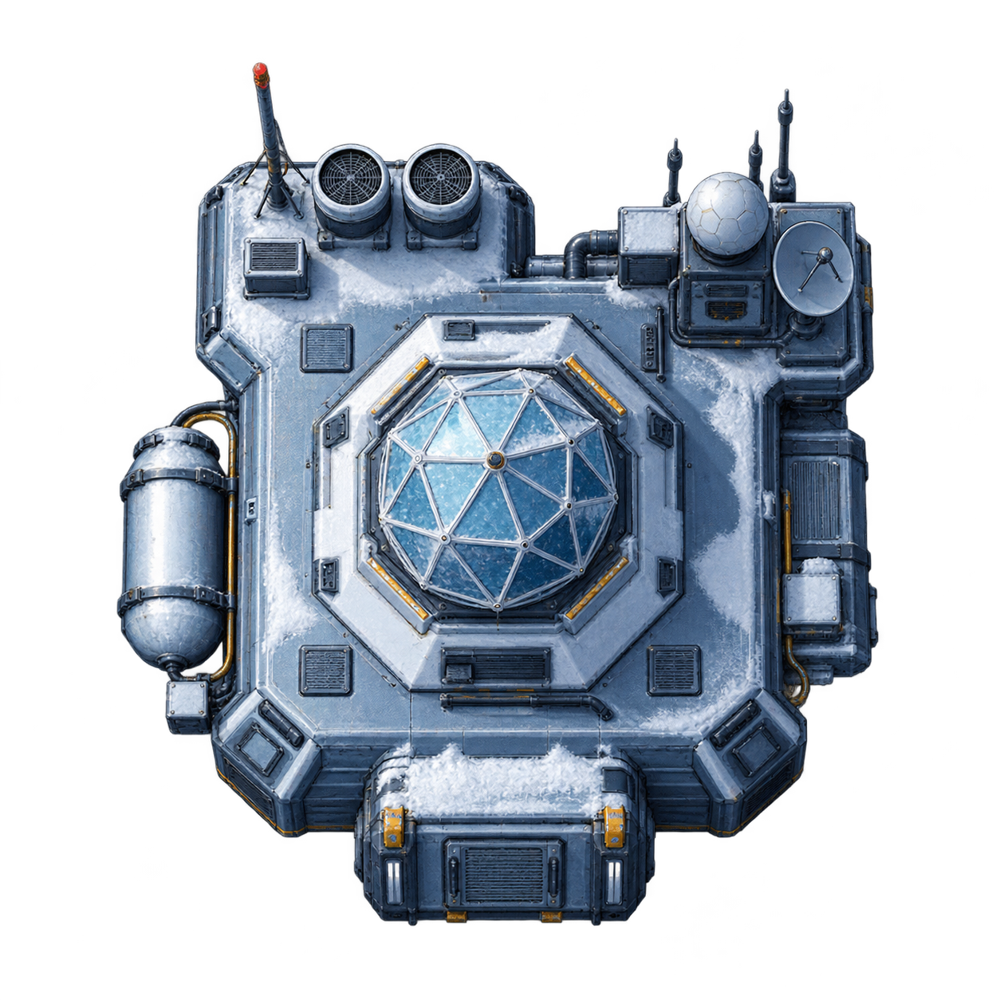
ice-buildingart/mechs/tilesПромпт из манифеста
Use case: stylized-concept. Tactical game terrain tile, 512x512, STRICT 90-degree orthographic top-down view, NO perspective. Detailed semi-realistic industrial space RPG art, readable at small scale, no text, grid or units. Pale cyan ice, packed snow and cold blue armored habitat materials. ONE isolated compact building ROOF seen strictly from above, including tiny roof equipment; no front facade, no ground. Genuinely transparent alpha background. Entire isolated object visible, 8% transparent margin. Consistent soft upper-left illumination.
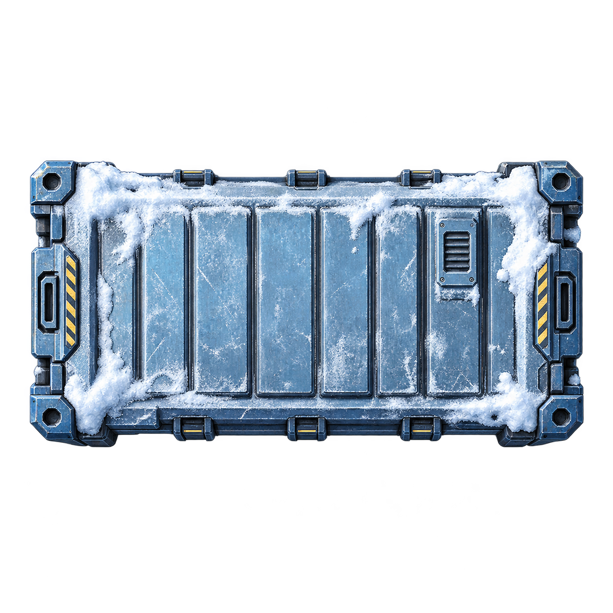
ice-crateart/mechs/tilesПромпт из манифеста
Use case: stylized-concept. Tactical game terrain tile, 512x512, STRICT 90-degree orthographic top-down view, NO perspective. Detailed semi-realistic industrial space RPG art, readable at small scale, no text, grid or units. Pale cyan ice, packed snow and cold blue armored habitat materials. ONE isolated sturdy cargo container providing cover, strictly top view, no ground. Genuinely transparent alpha background. Entire isolated object visible, 8% transparent margin. Consistent soft upper-left illumination.
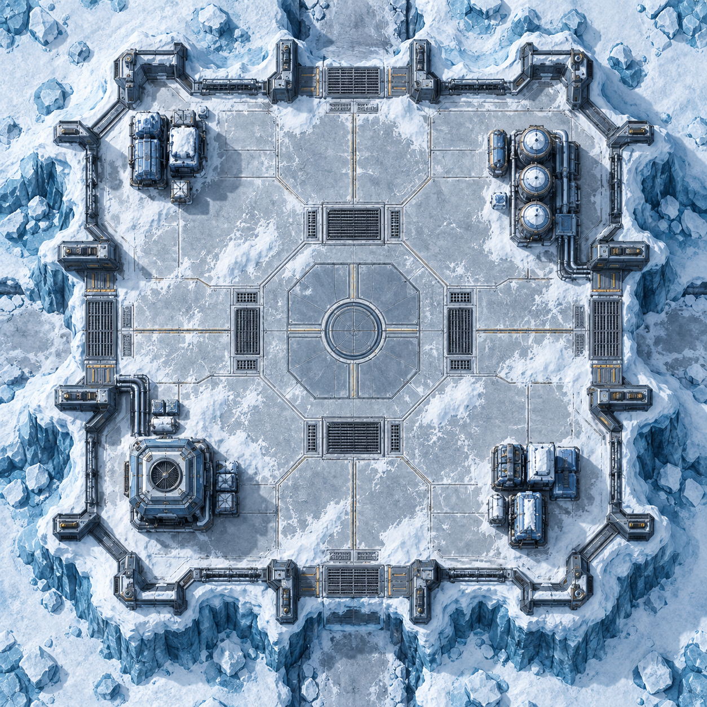
ice-high-groundart/mechs/tilesПромпт из манифеста
Use case: stylized-concept. Tactical game terrain tile, 512x512, STRICT 90-degree orthographic top-down view, NO perspective. Detailed semi-realistic industrial space RPG art, readable at small scale, no text, grid or units. Pale cyan ice, packed snow and cold blue armored habitat materials. Raised plateau or elevated platform surface filling most tile, readable ledge with a subtle shadow along lower edge, top-down. Opaque seamless TILEABLE texture, full bleed. Left matches right and top matches bottom, same material and scale along edges, no vignette or border. Consistent soft upper-left illumination.
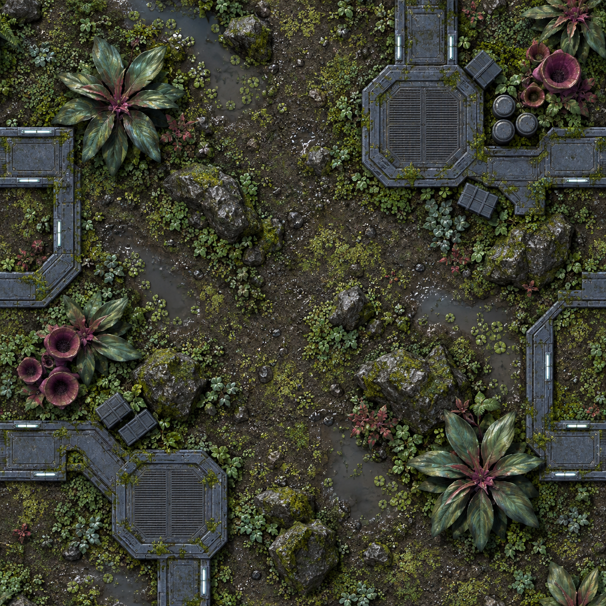
jungle-ground-1art/mechs/tilesПромпт из манифеста
Use case: stylized-concept. Tactical game terrain tile, 512x512, STRICT 90-degree orthographic top-down view, NO perspective. Detailed semi-realistic industrial space RPG art, readable at small scale, no text, grid or units. Dark humid soil, moss, oversized alien vegetation, blue-gray platform materials. Flat traversable base ground with subtle low-contrast small-scale surface texture. Opaque seamless TILEABLE texture, full bleed. Left matches right and top matches bottom, same material and scale along edges, no vignette or border. Consistent soft upper-left illumination.
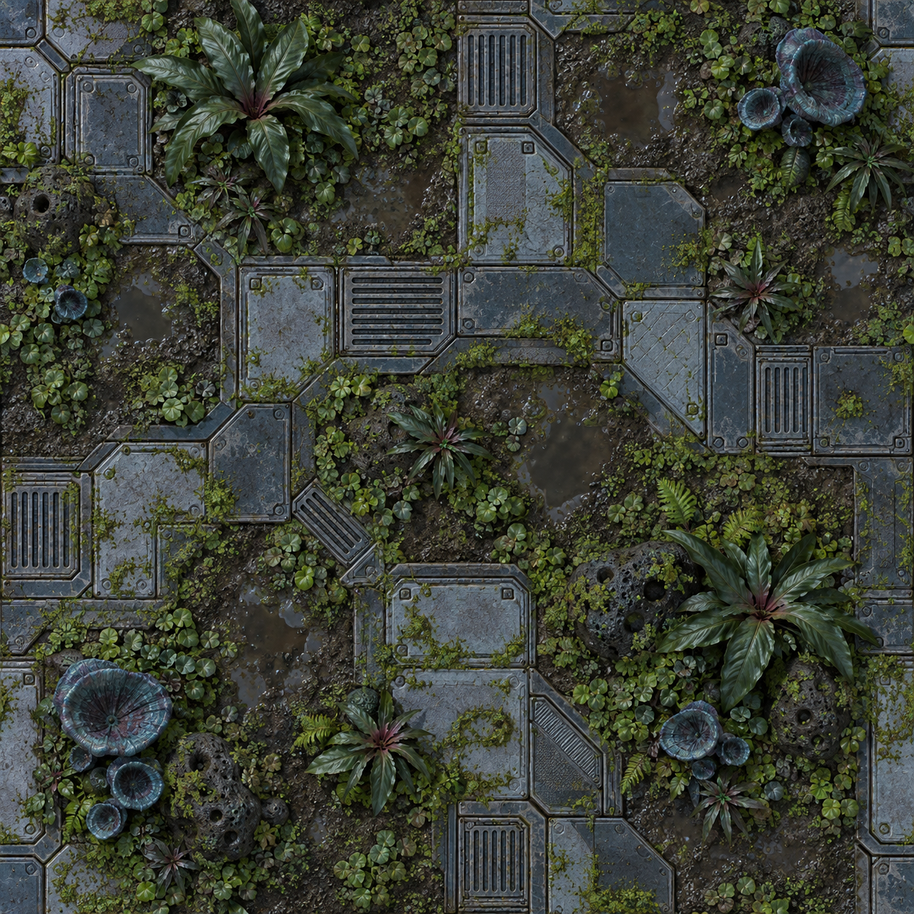
jungle-ground-2art/mechs/tilesПромпт из манифеста
Use case: stylized-concept. Tactical game terrain tile, 512x512, STRICT 90-degree orthographic top-down view, NO perspective. Detailed semi-realistic industrial space RPG art, readable at small scale, no text, grid or units. Dark humid soil, moss, oversized alien vegetation, blue-gray platform materials. Second distinct variation of flat traversable base ground, same palette and texture scale, different gentle wear and seam distribution. Opaque seamless TILEABLE texture, full bleed. Left matches right and top matches bottom, same material and scale along edges, no vignette or border. Consistent soft upper-left illumination.
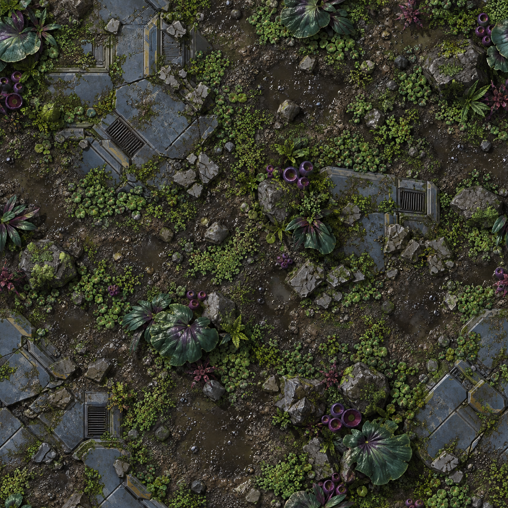
jungle-roughart/mechs/tilesПромпт из манифеста
Use case: stylized-concept. Tactical game terrain tile, 512x512, STRICT 90-degree orthographic top-down view, NO perspective. Detailed semi-realistic industrial space RPG art, readable at small scale, no text, grid or units. Dark humid soil, moss, oversized alien vegetation, blue-gray platform materials. Rough difficult terrain with rubble or dense textured patches; no tall obstacles. Opaque seamless TILEABLE texture, full bleed. Left matches right and top matches bottom, same material and scale along edges, no vignette or border. Consistent soft upper-left illumination.
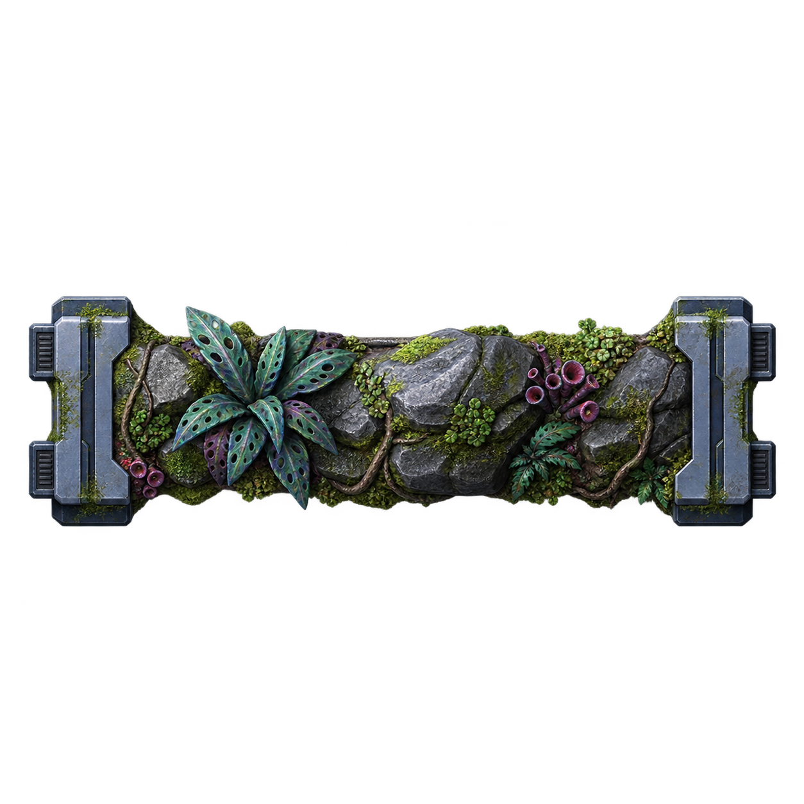
jungle-wallart/mechs/tilesПромпт из манифеста
Use case: stylized-concept. Tactical game terrain tile, 512x512, STRICT 90-degree orthographic top-down view, NO perspective. Detailed semi-realistic industrial space RPG art, readable at small scale, no text, grid or units. Dark humid soil, moss, oversized alien vegetation, blue-gray platform materials. ONE isolated wall or rocky barrier segment, seen strictly from above, horizontal modular piece with straight joinable ends. Genuinely transparent alpha background. Entire isolated object visible, 8% transparent margin. Consistent soft upper-left illumination.
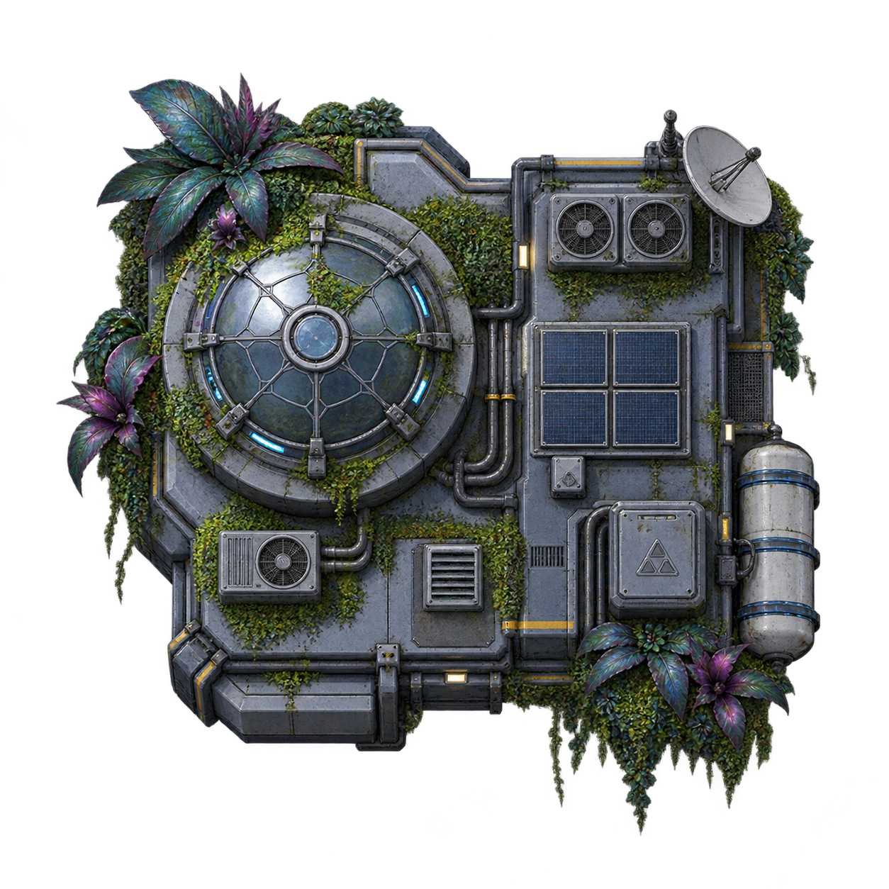
jungle-buildingart/mechs/tilesПромпт из манифеста
Use case: stylized-concept. Tactical game terrain tile, 512x512, STRICT 90-degree orthographic top-down view, NO perspective. Detailed semi-realistic industrial space RPG art, readable at small scale, no text, grid or units. Dark humid soil, moss, oversized alien vegetation, blue-gray platform materials. ONE isolated compact building ROOF seen strictly from above, including tiny roof equipment; no front facade, no ground. Genuinely transparent alpha background. Entire isolated object visible, 8% transparent margin. Consistent soft upper-left illumination.
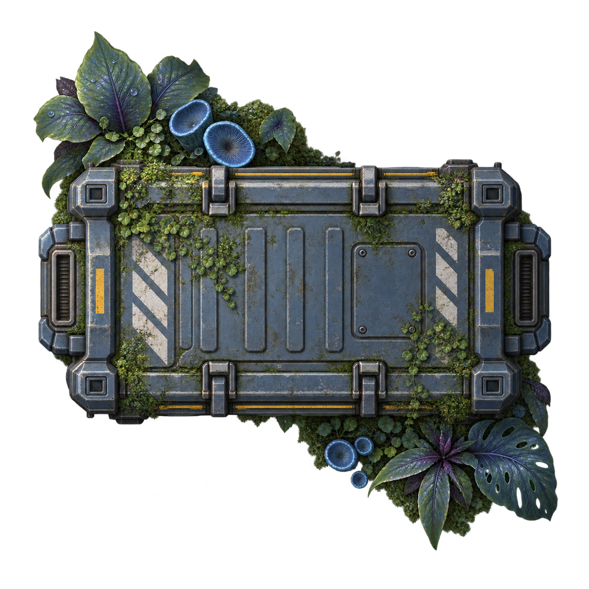
jungle-crateart/mechs/tilesПромпт из манифеста
Use case: stylized-concept. Tactical game terrain tile, 512x512, STRICT 90-degree orthographic top-down view, NO perspective. Detailed semi-realistic industrial space RPG art, readable at small scale, no text, grid or units. Dark humid soil, moss, oversized alien vegetation, blue-gray platform materials. ONE isolated sturdy cargo container providing cover, strictly top view, no ground. Genuinely transparent alpha background. Entire isolated object visible, 8% transparent margin. Consistent soft upper-left illumination.
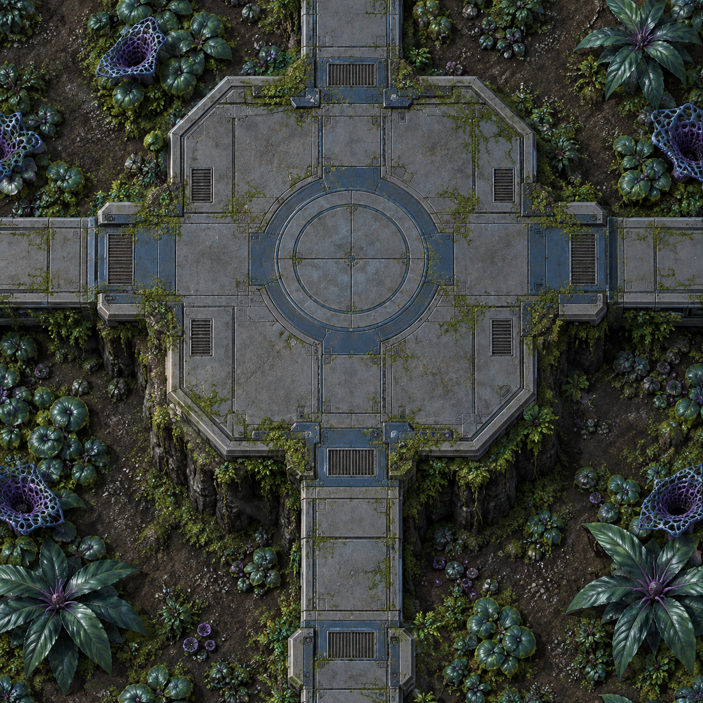
jungle-high-groundart/mechs/tilesПромпт из манифеста
Use case: stylized-concept. Tactical game terrain tile, 512x512, STRICT 90-degree orthographic top-down view, NO perspective. Detailed semi-realistic industrial space RPG art, readable at small scale, no text, grid or units. Dark humid soil, moss, oversized alien vegetation, blue-gray platform materials. Raised plateau or elevated platform surface filling most tile, readable ledge with a subtle shadow along lower edge, top-down. Opaque seamless TILEABLE texture, full bleed. Left matches right and top matches bottom, same material and scale along edges, no vignette or border. Consistent soft upper-left illumination.
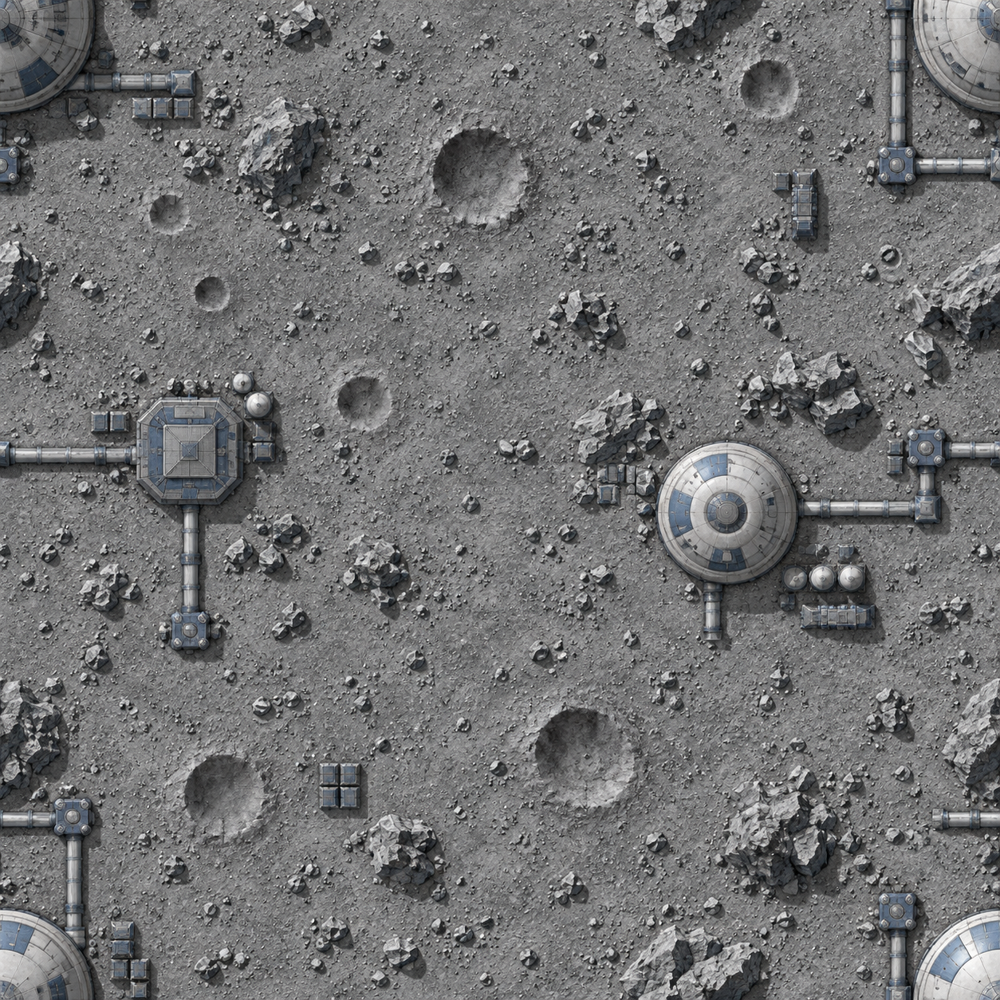
barren-ground-1art/mechs/tilesПромпт из манифеста
Use case: stylized-concept. Tactical game terrain tile, 512x512, STRICT 90-degree orthographic top-down view, NO perspective. Detailed semi-realistic industrial space RPG art, readable at small scale, no text, grid or units. Gray airless lunar regolith, crater fragments, sealed blue-gray colony materials. Flat traversable base ground with subtle low-contrast small-scale surface texture. Opaque seamless TILEABLE texture, full bleed. Left matches right and top matches bottom, same material and scale along edges, no vignette or border. Consistent soft upper-left illumination.
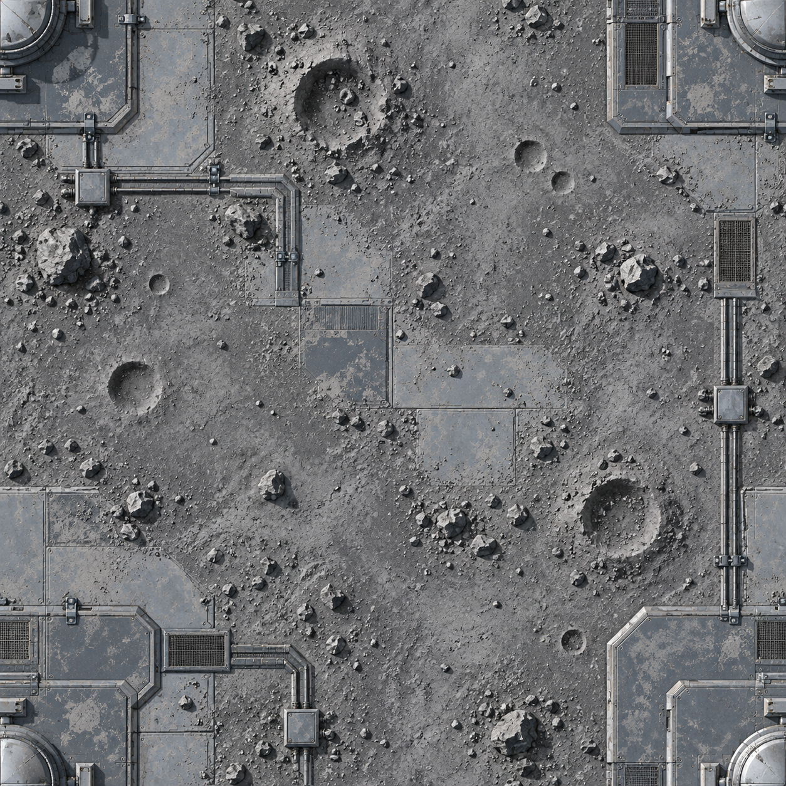
barren-ground-2art/mechs/tilesПромпт из манифеста
Use case: stylized-concept. Tactical game terrain tile, 512x512, STRICT 90-degree orthographic top-down view, NO perspective. Detailed semi-realistic industrial space RPG art, readable at small scale, no text, grid or units. Gray airless lunar regolith, crater fragments, sealed blue-gray colony materials. Second distinct variation of flat traversable base ground, same palette and texture scale, different gentle wear and seam distribution. Opaque seamless TILEABLE texture, full bleed. Left matches right and top matches bottom, same material and scale along edges, no vignette or border. Consistent soft upper-left illumination.
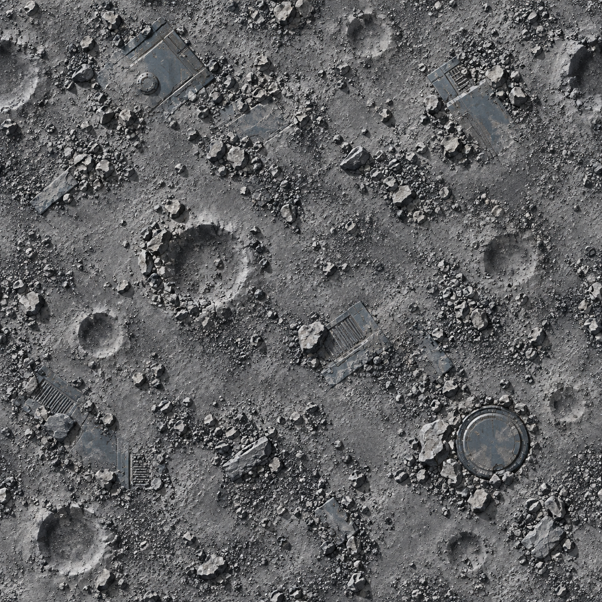
barren-roughart/mechs/tilesПромпт из манифеста
Use case: stylized-concept. Tactical game terrain tile, 512x512, STRICT 90-degree orthographic top-down view, NO perspective. Detailed semi-realistic industrial space RPG art, readable at small scale, no text, grid or units. Gray airless lunar regolith, crater fragments, sealed blue-gray colony materials. Rough difficult terrain with rubble or dense textured patches; no tall obstacles. Opaque seamless TILEABLE texture, full bleed. Left matches right and top matches bottom, same material and scale along edges, no vignette or border. Consistent soft upper-left illumination.
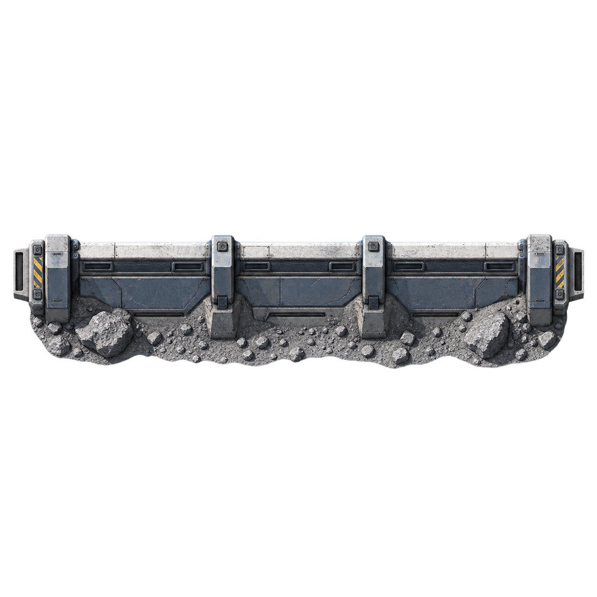
barren-wallart/mechs/tilesПромпт из манифеста
Use case: stylized-concept. Tactical game terrain tile, 512x512, STRICT 90-degree orthographic top-down view, NO perspective. Detailed semi-realistic industrial space RPG art, readable at small scale, no text, grid or units. Gray airless lunar regolith, crater fragments, sealed blue-gray colony materials. ONE isolated wall or rocky barrier segment, seen strictly from above, horizontal modular piece with straight joinable ends. Genuinely transparent alpha background. Entire isolated object visible, 8% transparent margin. Consistent soft upper-left illumination.
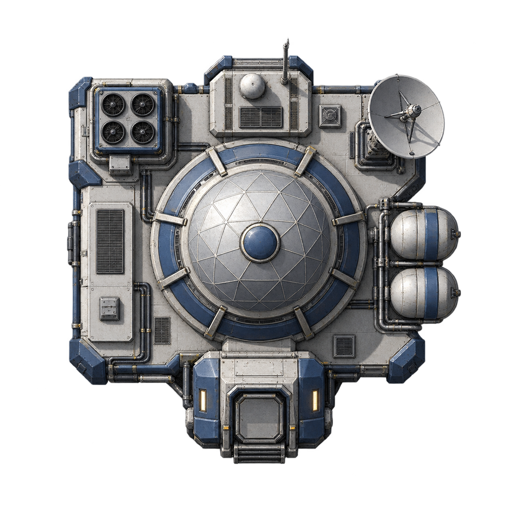
barren-buildingart/mechs/tilesПромпт из манифеста
Use case: stylized-concept. Tactical game terrain tile, 512x512, STRICT 90-degree orthographic top-down view, NO perspective. Detailed semi-realistic industrial space RPG art, readable at small scale, no text, grid or units. Gray airless lunar regolith, crater fragments, sealed blue-gray colony materials. ONE isolated compact building ROOF seen strictly from above, including tiny roof equipment; no front facade, no ground. Genuinely transparent alpha background. Entire isolated object visible, 8% transparent margin. Consistent soft upper-left illumination.
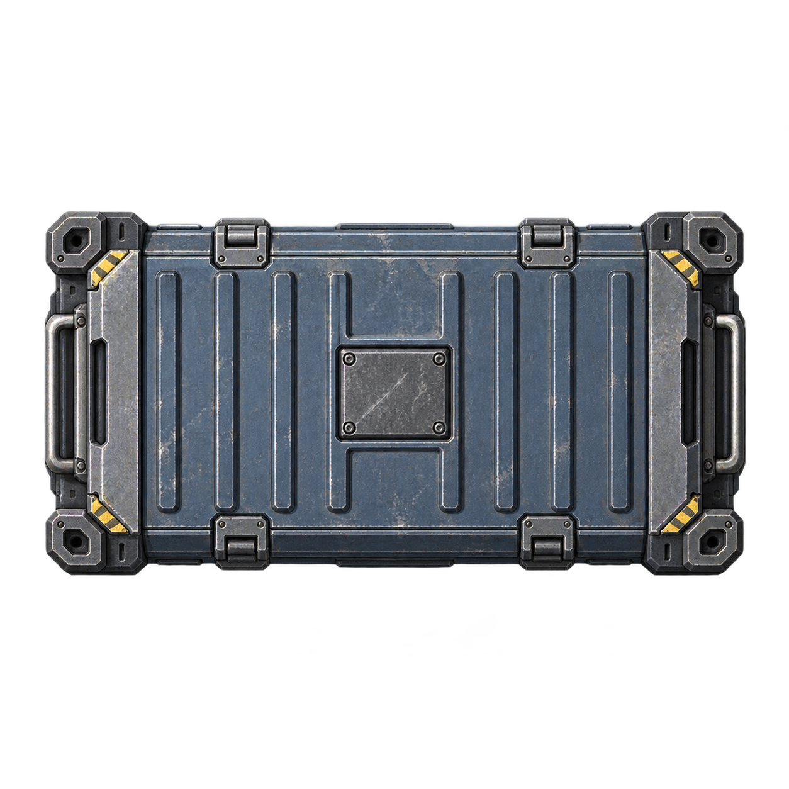
barren-crateart/mechs/tilesПромпт из манифеста
Use case: stylized-concept. Tactical game terrain tile, 512x512, STRICT 90-degree orthographic top-down view, NO perspective. Detailed semi-realistic industrial space RPG art, readable at small scale, no text, grid or units. Gray airless lunar regolith, crater fragments, sealed blue-gray colony materials. ONE isolated sturdy cargo container providing cover, strictly top view, no ground. Genuinely transparent alpha background. Entire isolated object visible, 8% transparent margin. Consistent soft upper-left illumination.
Промпт из манифеста
Use case: stylized-concept. Tactical game terrain tile, 512x512, STRICT 90-degree orthographic top-down view, NO perspective. Detailed semi-realistic industrial space RPG art, readable at small scale, no text, grid or units. Gray airless lunar regolith, crater fragments, sealed blue-gray colony materials. Raised plateau or elevated platform surface filling most tile, readable ledge with a subtle shadow along lower edge, top-down. Opaque seamless TILEABLE texture, full bleed. Left matches right and top matches bottom, same material and scale along edges, no vignette or border. Consistent soft upper-left illumination.
Промпт из манифеста
Use case: stylized-concept. Tactical game terrain tile, 512x512, STRICT 90-degree orthographic top-down view, NO perspective. Detailed semi-realistic industrial space RPG art, readable at small scale, no text, grid or units. Dark navy steel floor panels, gunmetal conduits and pale armored orbital station architecture. Flat traversable base ground with subtle low-contrast small-scale surface texture. Opaque seamless TILEABLE texture, full bleed. Left matches right and top matches bottom, same material and scale along edges, no vignette or border. Consistent soft upper-left illumination.
Промпт из манифеста
Use case: stylized-concept. Tactical game terrain tile, 512x512, STRICT 90-degree orthographic top-down view, NO perspective. Detailed semi-realistic industrial space RPG art, readable at small scale, no text, grid or units. Dark navy steel floor panels, gunmetal conduits and pale armored orbital station architecture. Second distinct variation of flat traversable base ground, same palette and texture scale, different gentle wear and seam distribution. Opaque seamless TILEABLE texture, full bleed. Left matches right and top matches bottom, same material and scale along edges, no vignette or border. Consistent soft upper-left illumination.
Промпт из манифеста
Use case: stylized-concept. Tactical game terrain tile, 512x512, STRICT 90-degree orthographic top-down view, NO perspective. Detailed semi-realistic industrial space RPG art, readable at small scale, no text, grid or units. Dark navy steel floor panels, gunmetal conduits and pale armored orbital station architecture. Rough difficult terrain with rubble or dense textured patches; no tall obstacles. Opaque seamless TILEABLE texture, full bleed. Left matches right and top matches bottom, same material and scale along edges, no vignette or border. Consistent soft upper-left illumination.
Промпт из манифеста
Use case: stylized-concept. Tactical game terrain tile, 512x512, STRICT 90-degree orthographic top-down view, NO perspective. Detailed semi-realistic industrial space RPG art, readable at small scale, no text, grid or units. Dark navy steel floor panels, gunmetal conduits and pale armored orbital station architecture. ONE isolated wall or rocky barrier segment, seen strictly from above, horizontal modular piece with straight joinable ends. Genuinely transparent alpha background. Entire isolated object visible, 8% transparent margin. Consistent soft upper-left illumination.
Промпт из манифеста
Use case: stylized-concept. Tactical game terrain tile, 512x512, STRICT 90-degree orthographic top-down view, NO perspective. Detailed semi-realistic industrial space RPG art, readable at small scale, no text, grid or units. Dark navy steel floor panels, gunmetal conduits and pale armored orbital station architecture. ONE isolated compact building ROOF seen strictly from above, including tiny roof equipment; no front facade, no ground. Genuinely transparent alpha background. Entire isolated object visible, 8% transparent margin. Consistent soft upper-left illumination.
Промпт из манифеста
Use case: stylized-concept. Tactical game terrain tile, 512x512, STRICT 90-degree orthographic top-down view, NO perspective. Detailed semi-realistic industrial space RPG art, readable at small scale, no text, grid or units. Dark navy steel floor panels, gunmetal conduits and pale armored orbital station architecture. ONE isolated sturdy cargo container providing cover, strictly top view, no ground. Genuinely transparent alpha background. Entire isolated object visible, 8% transparent margin. Consistent soft upper-left illumination.
Промпт из манифеста
Use case: stylized-concept. Tactical game terrain tile, 512x512, STRICT 90-degree orthographic top-down view, NO perspective. Detailed semi-realistic industrial space RPG art, readable at small scale, no text, grid or units. Dark navy steel floor panels, gunmetal conduits and pale armored orbital station architecture. Raised plateau or elevated platform surface filling most tile, readable ledge with a subtle shadow along lower edge, top-down. Opaque seamless TILEABLE texture, full bleed. Left matches right and top matches bottom, same material and scale along edges, no vignette or border. Consistent soft upper-left illumination.
Промпт из манифеста
Use case: stylized-concept. Top-down game VFX animation sheet, 1536x1024, EXACT 3 columns by 2 rows, SIX chronological frames read left to right then next row. Kinetic impact on metal: small white-yellow flash, sharp sparks and a few gray fragments, then fading smoke. Genuinely transparent background. Same fixed center and scale each cell, consistent animation, effects stay in central 70% of each cell, generous transparent gutters, no overlap or grid lines. No mech or scenery, no text, controlled glow and soft transparent edges.
Промпт из манифеста
Use case: stylized-concept. Top-down game VFX animation sheet, 1536x1024, EXACT 3 columns by 2 rows, SIX chronological frames read left to right then next row. Mech destruction explosion: bright orange-white ignition grows into orange fireball and dark smoke then fades. Genuinely transparent background. Same fixed center and scale each cell, consistent animation, effects stay in central 70% of each cell, generous transparent gutters, no overlap or grid lines. No mech or scenery, no text, controlled glow and soft transparent edges.
Промпт из манифеста
Use case: stylized-concept. Top-down game VFX animation sheet, 1536x1024, EXACT 3 columns by 2 rows, SIX chronological frames read left to right then next row. Cyan energy shield impact: tiny contact flare grows into curved blue hexagonal shield ripple then dissipates. Genuinely transparent background. Same fixed center and scale each cell, consistent animation, effects stay in central 70% of each cell, generous transparent gutters, no overlap or grid lines. No mech or scenery, no text, controlled glow and soft transparent edges.
Промпт из манифеста
Use case: stylized-concept. Single production space RPG background, 1600x1200 landscape 4:3. Detailed semi-realistic game illustration, worn gunmetal and blue-gray steel, dark navy shadows, restrained cyan practical lighting and amber details, clear midtones, matching industrial spaceship sprites. No text, logos, watermark, borders, UI. Key content inside central 60%, background fills frame. Bottom quarter quiet and dark for dialogue overlay. Planet settlement mech maintenance hangar, exactly TWO empty repair stands, cranes and tools along edges, dark steel and cyan task lighting. Empty central working area for game-overlaid mechs, no mechs or people anywhere. View into hangar, carefully readable work platforms, central 60% uncluttered.
Промпт из манифеста
Use case: stylized-concept. Single production space RPG background, 1600x1200 landscape 4:3. Detailed semi-realistic game illustration, worn gunmetal and blue-gray steel, dark navy shadows, restrained cyan practical lighting and amber details, clear midtones, matching industrial spaceship sprites. No text, logos, watermark, borders, UI. Key content inside central 60%, background fills frame. Bottom quarter quiet and dark for dialogue overlay. This is an ORBITAL STATION interior, not a planet surface. A large, clean, well-funded ring station in the safest core system: bright white and navy wall panels, polished deck plates, orderly cable runs, and a wide curved window through which the station's own inner rim curves away into the distance with tiny lit windows along it. Station dispatch and mission office. Eye-level medium-wide view: a Black woman in her fifties, tall and broad-shouldered, with short natural hair going grey at the temples, reading glasses hanging on a cord over a navy station uniform with two thin rank stripes stands behind a low control desk, facing the player. Head centered at x50% y34%, torso at y48%, entire head safely below y22%, face softly lit and legible, not a close-up portrait. Behind them an abstract cyan mission board with route lines and geometric task cards, no readable text. The person occupies about 35% of the width; the environment is most of the image. Quiet dark desk front in the bottom quarter for dialogue overlay. The person is an ordinary working adult, not a fashion model and not a hero portrait: natural face proportions, visible skin texture and pores, small asymmetries, plain hair that looks lived in, no glamour makeup, no idealised beauty, no exaggerated figure, practical utilitarian work clothing that covers the body, calm plausible working expression. EXACTLY ONE person in the whole frame, no bystanders, no reflections of other people.
Промпт из манифеста
Use case: stylized-concept. Single production space RPG background, 1600x1200 landscape 4:3. Detailed semi-realistic game illustration, worn gunmetal and blue-gray steel, dark navy shadows, restrained cyan practical lighting and amber details, clear midtones, matching industrial spaceship sprites. No text, logos, watermark, borders, UI. Key content inside central 60%, background fills frame. Bottom quarter quiet and dark for dialogue overlay. This is an ORBITAL STATION interior, not a planet surface. A large, clean, well-funded ring station in the safest core system: bright white and navy wall panels, polished deck plates, orderly cable runs, and a wide curved window through which the station's own inner rim curves away into the distance with tiny lit windows along it. Station cargo trading counter. Eye-level medium-wide view: a heavyset white man in his forties, balding with close-cropped blond stubble and a round friendly face, sleeves of a grey work shirt rolled over thick forearms, a pencil behind one ear stands behind a utilitarian metal counter, facing the player. Head centered at x50% y34%, torso at y48%, entire head safely below y22%, face softly lit and legible, not a close-up portrait. Modular cargo crates, sealed component boxes and canisters on shelves at the sides, small cyan inventory screens with abstract graphics only. Restrained warm amber task lights on the face and the counter amid blue industrial shadows. The person occupies about 35% of the width. Quiet dark counter front in the bottom quarter for dialogue overlay. The person is an ordinary working adult, not a fashion model and not a hero portrait: natural face proportions, visible skin texture and pores, small asymmetries, plain hair that looks lived in, no glamour makeup, no idealised beauty, no exaggerated figure, practical utilitarian work clothing that covers the body, calm plausible working expression. EXACTLY ONE person in the whole frame, no bystanders, no reflections of other people.
Промпт из манифеста
Use case: stylized-concept. Single production space RPG background, 1600x1200 landscape 4:3. Detailed semi-realistic game illustration, worn gunmetal and blue-gray steel, dark navy shadows, restrained cyan practical lighting and amber details, clear midtones, matching industrial spaceship sprites. No text, logos, watermark, borders, UI. Key content inside central 60%, background fills frame. Bottom quarter quiet and dark for dialogue overlay. This is an ORBITAL STATION interior, not a planet surface. A busy commercial hub interior: high ceiling, stacked containers behind a yellow safety rail, gantry cranes and small cargo lifts working in the background, amber loading lights sweeping across the deck. Station dispatch and mission office. Eye-level medium-wide view: an East Asian man in his early thirties, slim, with neat short black hair and thin-rimmed glasses, a plain navy uniform jacket over a grey collarless shirt, holding a slate tablet, brisk and businesslike stands behind a low control desk, facing the player. Head centered at x50% y34%, torso at y48%, entire head safely below y22%, face softly lit and legible, not a close-up portrait. Behind them an abstract cyan mission board with route lines and geometric task cards, no readable text. The person occupies about 35% of the width; the environment is most of the image. Quiet dark desk front in the bottom quarter for dialogue overlay. The person is an ordinary working adult, not a fashion model and not a hero portrait: natural face proportions, visible skin texture and pores, small asymmetries, plain hair that looks lived in, no glamour makeup, no idealised beauty, no exaggerated figure, practical utilitarian work clothing that covers the body, calm plausible working expression. EXACTLY ONE person in the whole frame, no bystanders, no reflections of other people.
Промпт из манифеста
Use case: stylized-concept. Single production space RPG background, 1600x1200 landscape 4:3. Detailed semi-realistic game illustration, worn gunmetal and blue-gray steel, dark navy shadows, restrained cyan practical lighting and amber details, clear midtones, matching industrial spaceship sprites. No text, logos, watermark, borders, UI. Key content inside central 60%, background fills frame. Bottom quarter quiet and dark for dialogue overlay. This is an ORBITAL STATION interior, not a planet surface. A busy commercial hub interior: high ceiling, stacked containers behind a yellow safety rail, gantry cranes and small cargo lifts working in the background, amber loading lights sweeping across the deck. Station cargo trading counter. Eye-level medium-wide view: a blonde woman in her forties, sturdily built and sun-lined, straw-blonde hair pulled into a practical braid, a scuffed canvas trading coat over a quilted vest, one hand resting on a stack of manifests stands behind a utilitarian metal counter, facing the player. Head centered at x50% y34%, torso at y48%, entire head safely below y22%, face softly lit and legible, not a close-up portrait. Modular cargo crates, sealed component boxes and canisters on shelves at the sides, small cyan inventory screens with abstract graphics only. Restrained warm amber task lights on the face and the counter amid blue industrial shadows. The person occupies about 35% of the width. Quiet dark counter front in the bottom quarter for dialogue overlay. The person is an ordinary working adult, not a fashion model and not a hero portrait: natural face proportions, visible skin texture and pores, small asymmetries, plain hair that looks lived in, no glamour makeup, no idealised beauty, no exaggerated figure, practical utilitarian work clothing that covers the body, calm plausible working expression. EXACTLY ONE person in the whole frame, no bystanders, no reflections of other people.
Промпт из манифеста
Use case: stylized-concept. Single production space RPG background, 1600x1200 landscape 4:3. Detailed semi-realistic game illustration, worn gunmetal and blue-gray steel, dark navy shadows, restrained cyan practical lighting and amber details, clear midtones, matching industrial spaceship sprites. No text, logos, watermark, borders, UI. Key content inside central 60%, background fills frame. Bottom quarter quiet and dark for dialogue overlay. This is an ORBITAL STATION interior, not a planet surface. A residential habitat interior: hydroponic greenery in wall planters, warm domestic lamps mixed with cyan panel light, a quiet family-scale corridor with numbered doors visible behind, clean and lived in. Station dispatch and mission office. Eye-level medium-wide view: a white man in his sixties, thin and slightly stooped, with a full grey beard and deep smile lines, a hand-knitted cardigan worn over a faded station uniform, kindly and unhurried stands behind a low control desk, facing the player. Head centered at x50% y34%, torso at y48%, entire head safely below y22%, face softly lit and legible, not a close-up portrait. Behind them an abstract cyan mission board with route lines and geometric task cards, no readable text. The person occupies about 35% of the width; the environment is most of the image. Quiet dark desk front in the bottom quarter for dialogue overlay. The person is an ordinary working adult, not a fashion model and not a hero portrait: natural face proportions, visible skin texture and pores, small asymmetries, plain hair that looks lived in, no glamour makeup, no idealised beauty, no exaggerated figure, practical utilitarian work clothing that covers the body, calm plausible working expression. EXACTLY ONE person in the whole frame, no bystanders, no reflections of other people.
Промпт из манифеста
Use case: stylized-concept. Single production space RPG background, 1600x1200 landscape 4:3. Detailed semi-realistic game illustration, worn gunmetal and blue-gray steel, dark navy shadows, restrained cyan practical lighting and amber details, clear midtones, matching industrial spaceship sprites. No text, logos, watermark, borders, UI. Key content inside central 60%, background fills frame. Bottom quarter quiet and dark for dialogue overlay. This is an ORBITAL STATION interior, not a planet surface. A residential habitat interior: hydroponic greenery in wall planters, warm domestic lamps mixed with cyan panel light, a quiet family-scale corridor with numbered doors visible behind, clean and lived in. Station cargo trading counter. Eye-level medium-wide view: a South Asian woman in her thirties, of average build, dark hair in a low bun, a patterned headscarf draped over the shoulders of a plain work tunic, small steel earrings, warm and talkative stands behind a utilitarian metal counter, facing the player. Head centered at x50% y34%, torso at y48%, entire head safely below y22%, face softly lit and legible, not a close-up portrait. Modular cargo crates, sealed component boxes and canisters on shelves at the sides, small cyan inventory screens with abstract graphics only. Restrained warm amber task lights on the face and the counter amid blue industrial shadows. The person occupies about 35% of the width. Quiet dark counter front in the bottom quarter for dialogue overlay. The person is an ordinary working adult, not a fashion model and not a hero portrait: natural face proportions, visible skin texture and pores, small asymmetries, plain hair that looks lived in, no glamour makeup, no idealised beauty, no exaggerated figure, practical utilitarian work clothing that covers the body, calm plausible working expression. EXACTLY ONE person in the whole frame, no bystanders, no reflections of other people.
Промпт из манифеста
Use case: stylized-concept. Single production space RPG background, 1600x1200 landscape 4:3. Detailed semi-realistic game illustration, worn gunmetal and blue-gray steel, dark navy shadows, restrained cyan practical lighting and amber details, clear midtones, matching industrial spaceship sprites. No text, logos, watermark, borders, UI. Key content inside central 60%, background fills frame. Bottom quarter quiet and dark for dialogue overlay. This is an ORBITAL STATION interior, not a planet surface. A worn rim habitat under strain: bulkhead patches welded over old breaches, conduits taped along the walls, one panel flickering, air thick and dim, salvaged mismatched fittings everywhere. Station dispatch and mission office. Eye-level medium-wide view: a Black man in his forties, lean and hard-eyed, shaved head, an old scar across one cheekbone, a patched uniform jacket with one sleeve replaced in a different shade, wary and watchful stands behind a low control desk, facing the player. Head centered at x50% y34%, torso at y48%, entire head safely below y22%, face softly lit and legible, not a close-up portrait. Behind them an abstract cyan mission board with route lines and geometric task cards, no readable text. The person occupies about 35% of the width; the environment is most of the image. Quiet dark desk front in the bottom quarter for dialogue overlay. The person is an ordinary working adult, not a fashion model and not a hero portrait: natural face proportions, visible skin texture and pores, small asymmetries, plain hair that looks lived in, no glamour makeup, no idealised beauty, no exaggerated figure, practical utilitarian work clothing that covers the body, calm plausible working expression. EXACTLY ONE person in the whole frame, no bystanders, no reflections of other people.
Промпт из манифеста
Use case: stylized-concept. Single production space RPG background, 1600x1200 landscape 4:3. Detailed semi-realistic game illustration, worn gunmetal and blue-gray steel, dark navy shadows, restrained cyan practical lighting and amber details, clear midtones, matching industrial spaceship sprites. No text, logos, watermark, borders, UI. Key content inside central 60%, background fills frame. Bottom quarter quiet and dark for dialogue overlay. This is an ORBITAL STATION interior, not a planet surface. A worn rim habitat under strain: bulkhead patches welded over old breaches, conduits taped along the walls, one panel flickering, air thick and dim, salvaged mismatched fittings everywhere. Station cargo trading counter. Eye-level medium-wide view: a white woman in her late sixties, small, wiry and weather-beaten, cropped white hair, deep creases around the mouth, a bulky insulated jacket over layered work clothes, blunt and unimpressed stands behind a utilitarian metal counter, facing the player. Head centered at x50% y34%, torso at y48%, entire head safely below y22%, face softly lit and legible, not a close-up portrait. Modular cargo crates, sealed component boxes and canisters on shelves at the sides, small cyan inventory screens with abstract graphics only. Restrained warm amber task lights on the face and the counter amid blue industrial shadows. The person occupies about 35% of the width. Quiet dark counter front in the bottom quarter for dialogue overlay. The person is an ordinary working adult, not a fashion model and not a hero portrait: natural face proportions, visible skin texture and pores, small asymmetries, plain hair that looks lived in, no glamour makeup, no idealised beauty, no exaggerated figure, practical utilitarian work clothing that covers the body, calm plausible working expression. EXACTLY ONE person in the whole frame, no bystanders, no reflections of other people.
Промпт из манифеста
Use case: stylized-concept. Single production space RPG background, 1600x1200 landscape 4:3. Detailed semi-realistic game illustration, worn gunmetal and blue-gray steel, dark navy shadows, restrained cyan practical lighting and amber details, clear midtones, matching industrial spaceship sprites. No text, logos, watermark, borders, UI. Key content inside central 60%, background fills frame. Bottom quarter quiet and dark for dialogue overlay. This is an ORBITAL STATION interior, not a planet surface. A military frontier fortress interior: armoured bulkheads, a half-open blast door, sealed ammunition racks, cold blue floodlights, painted hazard chevrons and stencil symbols only, no lettering. Station dispatch and mission office. Eye-level medium-wide view: a Latin American woman in her forties, athletic and square-shouldered, dark hair in a tight bun with grey at the temples, an armoured vest over a navy uniform, jaw set, stern and formal stands behind a low control desk, facing the player. Head centered at x50% y34%, torso at y48%, entire head safely below y22%, face softly lit and legible, not a close-up portrait. Behind them an abstract cyan mission board with route lines and geometric task cards, no readable text. The person occupies about 35% of the width; the environment is most of the image. Quiet dark desk front in the bottom quarter for dialogue overlay. The person is an ordinary working adult, not a fashion model and not a hero portrait: natural face proportions, visible skin texture and pores, small asymmetries, plain hair that looks lived in, no glamour makeup, no idealised beauty, no exaggerated figure, practical utilitarian work clothing that covers the body, calm plausible working expression. EXACTLY ONE person in the whole frame, no bystanders, no reflections of other people.
Промпт из манифеста
Use case: stylized-concept. Single production space RPG background, 1600x1200 landscape 4:3. Detailed semi-realistic game illustration, worn gunmetal and blue-gray steel, dark navy shadows, restrained cyan practical lighting and amber details, clear midtones, matching industrial spaceship sprites. No text, logos, watermark, borders, UI. Key content inside central 60%, background fills frame. Bottom quarter quiet and dark for dialogue overlay. This is an ORBITAL STATION interior, not a planet surface. A military frontier fortress interior: armoured bulkheads, a half-open blast door, sealed ammunition racks, cold blue floodlights, painted hazard chevrons and stencil symbols only, no lettering. Station cargo trading counter. Eye-level medium-wide view: a heavyset Pacific Islander man in his fifties, bald, with dense tattoo work up both forearms, a sleeveless quilted vest over a grey shirt, a quartermaster's stylus tucked in the collar, dry and unhurried stands behind a utilitarian metal counter, facing the player. Head centered at x50% y34%, torso at y48%, entire head safely below y22%, face softly lit and legible, not a close-up portrait. Modular cargo crates, sealed component boxes and canisters on shelves at the sides, small cyan inventory screens with abstract graphics only. Restrained warm amber task lights on the face and the counter amid blue industrial shadows. The person occupies about 35% of the width. Quiet dark counter front in the bottom quarter for dialogue overlay. The person is an ordinary working adult, not a fashion model and not a hero portrait: natural face proportions, visible skin texture and pores, small asymmetries, plain hair that looks lived in, no glamour makeup, no idealised beauty, no exaggerated figure, practical utilitarian work clothing that covers the body, calm plausible working expression. EXACTLY ONE person in the whole frame, no bystanders, no reflections of other people.
Промпт из манифеста
Use case: stylized-concept. Single production space RPG background, 1600x1200 landscape 4:3. Detailed semi-realistic game illustration, worn gunmetal and blue-gray steel, dark navy shadows, restrained cyan practical lighting and amber details, clear midtones, matching industrial spaceship sprites. No text, logos, watermark, borders, UI. Key content inside central 60%, background fills frame. Bottom quarter quiet and dark for dialogue overlay. This is an ORBITAL STATION interior, not a planet surface. An ore-processing station interior: rock dust dulling every surface, conveyor ducts crossing overhead, bins of ore samples, black-and-yellow hazard striping, a grimy window onto the crusher hall. Station dispatch and mission office. Eye-level medium-wide view: a white woman in her fifties, stocky, with ash-blonde hair going grey pushed under a scratched hard hat, dust in the creases of her face, a high-visibility jacket over coveralls, tired but competent stands behind a low control desk, facing the player. Head centered at x50% y34%, torso at y48%, entire head safely below y22%, face softly lit and legible, not a close-up portrait. Behind them an abstract cyan mission board with route lines and geometric task cards, no readable text. The person occupies about 35% of the width; the environment is most of the image. Quiet dark desk front in the bottom quarter for dialogue overlay. The person is an ordinary working adult, not a fashion model and not a hero portrait: natural face proportions, visible skin texture and pores, small asymmetries, plain hair that looks lived in, no glamour makeup, no idealised beauty, no exaggerated figure, practical utilitarian work clothing that covers the body, calm plausible working expression. EXACTLY ONE person in the whole frame, no bystanders, no reflections of other people.
Промпт из манифеста
Use case: stylized-concept. Single production space RPG background, 1600x1200 landscape 4:3. Detailed semi-realistic game illustration, worn gunmetal and blue-gray steel, dark navy shadows, restrained cyan practical lighting and amber details, clear midtones, matching industrial spaceship sprites. No text, logos, watermark, borders, UI. Key content inside central 60%, background fills frame. Bottom quarter quiet and dark for dialogue overlay. This is an ORBITAL STATION interior, not a planet surface. An ore-processing station interior: rock dust dulling every surface, conveyor ducts crossing overhead, bins of ore samples, black-and-yellow hazard striping, a grimy window onto the crusher hall. Station cargo trading counter. Eye-level medium-wide view: a Central Asian man in his thirties, short and thick-set, with a heavy moustache and a shaved neck, grimy coveralls with the top unzipped, holding a fist-sized ore sample stands behind a utilitarian metal counter, facing the player. Head centered at x50% y34%, torso at y48%, entire head safely below y22%, face softly lit and legible, not a close-up portrait. Modular cargo crates, sealed component boxes and canisters on shelves at the sides, small cyan inventory screens with abstract graphics only. Restrained warm amber task lights on the face and the counter amid blue industrial shadows. The person occupies about 35% of the width. Quiet dark counter front in the bottom quarter for dialogue overlay. The person is an ordinary working adult, not a fashion model and not a hero portrait: natural face proportions, visible skin texture and pores, small asymmetries, plain hair that looks lived in, no glamour makeup, no idealised beauty, no exaggerated figure, practical utilitarian work clothing that covers the body, calm plausible working expression. EXACTLY ONE person in the whole frame, no bystanders, no reflections of other people.
Промпт из манифеста
Use case: stylized-concept. Single production space RPG background, 1600x1200 landscape 4:3. Detailed semi-realistic game illustration, worn gunmetal and blue-gray steel, dark navy shadows, restrained cyan practical lighting and amber details, clear midtones, matching industrial spaceship sprites. No text, logos, watermark, borders, UI. Key content inside central 60%, background fills frame. Bottom quarter quiet and dark for dialogue overlay. This is an ORBITAL STATION interior, not a planet surface. A tiny lonely rim outpost: one cramped module with a low ceiling, a single small round window onto black space, personal clutter on every ledge, mismatched salvaged fittings, one warm lamp fighting the dark. Station dispatch and mission office. Eye-level medium-wide view: a very thin white man in his seventies, stooped, with grey stubble and thick untidy grey hair, a worn hand-mended jumper over uniform trousers, visibly glad of a visitor stands behind a low control desk, facing the player. Head centered at x50% y34%, torso at y48%, entire head safely below y22%, face softly lit and legible, not a close-up portrait. Behind them an abstract cyan mission board with route lines and geometric task cards, no readable text. The person occupies about 35% of the width; the environment is most of the image. Quiet dark desk front in the bottom quarter for dialogue overlay. The person is an ordinary working adult, not a fashion model and not a hero portrait: natural face proportions, visible skin texture and pores, small asymmetries, plain hair that looks lived in, no glamour makeup, no idealised beauty, no exaggerated figure, practical utilitarian work clothing that covers the body, calm plausible working expression. EXACTLY ONE person in the whole frame, no bystanders, no reflections of other people.
Промпт из манифеста
Use case: stylized-concept. Single production space RPG background, 1600x1200 landscape 4:3. Detailed semi-realistic game illustration, worn gunmetal and blue-gray steel, dark navy shadows, restrained cyan practical lighting and amber details, clear midtones, matching industrial spaceship sprites. No text, logos, watermark, borders, UI. Key content inside central 60%, background fills frame. Bottom quarter quiet and dark for dialogue overlay. This is an ORBITAL STATION interior, not a planet surface. A tiny lonely rim outpost: one cramped module with a low ceiling, a single small round window onto black space, personal clutter on every ledge, mismatched salvaged fittings, one warm lamp fighting the dark. Station cargo trading counter. Eye-level medium-wide view: a young Black woman in her twenties, short and strongly built, hair in box braids tied back, oil-stained coveralls with the sleeves cut off, energetic and quick to grin stands behind a utilitarian metal counter, facing the player. Head centered at x50% y34%, torso at y48%, entire head safely below y22%, face softly lit and legible, not a close-up portrait. Modular cargo crates, sealed component boxes and canisters on shelves at the sides, small cyan inventory screens with abstract graphics only. Restrained warm amber task lights on the face and the counter amid blue industrial shadows. The person occupies about 35% of the width. Quiet dark counter front in the bottom quarter for dialogue overlay. The person is an ordinary working adult, not a fashion model and not a hero portrait: natural face proportions, visible skin texture and pores, small asymmetries, plain hair that looks lived in, no glamour makeup, no idealised beauty, no exaggerated figure, practical utilitarian work clothing that covers the body, calm plausible working expression. EXACTLY ONE person in the whole frame, no bystanders, no reflections of other people.
Промпт из манифеста
Use case: stylized-concept. Single production space RPG background, 1600x1200 landscape 4:3. Detailed semi-realistic game illustration, worn gunmetal and blue-gray steel, dark navy shadows, restrained cyan practical lighting and amber details, clear midtones, matching industrial spaceship sprites. No text, logos, watermark, borders, UI. Key content inside central 60%, background fills frame. Bottom quarter quiet and dark for dialogue overlay. This is an ORBITAL STATION interior, not a planet surface. A ranger base issue counter: navy-and-white livery with light-blue chevron stripes, disciplined racks of sealed equipment cases, locked weapon cabinets, everything squared away and marked with symbols only. Station cargo trading counter. Eye-level medium-wide view: an East Asian woman in her fifties, of average build, grey-streaked hair in a blunt bob, a navy-and-white ranger uniform with light-blue chevrons on the sleeve and a quartermaster's armband, precise and economical in her movements stands behind a utilitarian metal counter, facing the player. Head centered at x50% y34%, torso at y48%, entire head safely below y22%, face softly lit and legible, not a close-up portrait. Modular cargo crates, sealed component boxes and canisters on shelves at the sides, small cyan inventory screens with abstract graphics only. Restrained warm amber task lights on the face and the counter amid blue industrial shadows. The person occupies about 35% of the width. Quiet dark counter front in the bottom quarter for dialogue overlay. The person is an ordinary working adult, not a fashion model and not a hero portrait: natural face proportions, visible skin texture and pores, small asymmetries, plain hair that looks lived in, no glamour makeup, no idealised beauty, no exaggerated figure, practical utilitarian work clothing that covers the body, calm plausible working expression. EXACTLY ONE person in the whole frame, no bystanders, no reflections of other people.
Промпт из манифеста
Use case: stylized-concept. Single production space RPG background, 1600x1200 landscape 4:3. Detailed semi-realistic game illustration, worn gunmetal and blue-gray steel, dark navy shadows, restrained cyan practical lighting and amber details, clear midtones, matching industrial spaceship sprites. No text, logos, watermark, borders, UI. Key content inside central 60%, background fills frame. Bottom quarter quiet and dark for dialogue overlay. This is a PLANET SURFACE settlement, not an orbital station. Ocean world settlement built on offshore platforms above a deep blue sea: salt spray on the windows, mooring gantries and boat docks on the water below, low grey cloud and a pale horizon, wind-driven rain streaks. The air is breathable: people dress for weather, not for vacuum. Settlement administrative dispatch office. Eye-level medium-wide view: a Polynesian man in his forties, heavy through the chest, long black hair tied back and a sun-weathered face, a waterproof jacket with the hood down over a knitted jumper stands behind a low desk, facing the player. Head centered at x50% y34%, torso at y48%, entire head safely below y22%. An abstract mission board without any writing behind them. Windows show this biome. The person occupies about 35% of the width. Quiet dark lower quarter for dialogue overlay. The person is an ordinary working adult, not a fashion model and not a hero portrait: natural face proportions, visible skin texture and pores, small asymmetries, plain hair that looks lived in, no glamour makeup, no idealised beauty, no exaggerated figure, practical utilitarian work clothing that covers the body, calm plausible working expression. EXACTLY ONE person in the whole frame, no bystanders, no reflections of other people.
Промпт из манифеста
Use case: stylized-concept. Single production space RPG background, 1600x1200 landscape 4:3. Detailed semi-realistic game illustration, worn gunmetal and blue-gray steel, dark navy shadows, restrained cyan practical lighting and amber details, clear midtones, matching industrial spaceship sprites. No text, logos, watermark, borders, UI. Key content inside central 60%, background fills frame. Bottom quarter quiet and dark for dialogue overlay. This is a PLANET SURFACE settlement, not an orbital station. Ocean world settlement built on offshore platforms above a deep blue sea: salt spray on the windows, mooring gantries and boat docks on the water below, low grey cloud and a pale horizon, wind-driven rain streaks. The air is breathable: people dress for weather, not for vacuum. Local settlement market counter. Eye-level medium-wide view: a blonde woman in her thirties, freckled with a sunburnt nose and pale eyebrows, hair in a wind-messed ponytail, a bright waterproof coat over a wool sweater, fingerless gloves stands behind a utilitarian counter, facing the player. Head centered at x50% y34%, torso at y48%, entire head safely below y22%. Cargo, crates and local goods at the sides, the settlement environment visible behind. The person occupies about 35% of the width. Quiet dark counter front in the bottom quarter for dialogue overlay. The person is an ordinary working adult, not a fashion model and not a hero portrait: natural face proportions, visible skin texture and pores, small asymmetries, plain hair that looks lived in, no glamour makeup, no idealised beauty, no exaggerated figure, practical utilitarian work clothing that covers the body, calm plausible working expression. EXACTLY ONE person in the whole frame, no bystanders, no reflections of other people.
Промпт из манифеста
Use case: stylized-concept. Single production space RPG background, 1600x1200 landscape 4:3. Detailed semi-realistic game illustration, worn gunmetal and blue-gray steel, dark navy shadows, restrained cyan practical lighting and amber details, clear midtones, matching industrial spaceship sprites. No text, logos, watermark, borders, UI. Key content inside central 60%, background fills frame. Bottom quarter quiet and dark for dialogue overlay. This is a PLANET SURFACE settlement, not an orbital station. Ocean world settlement built on offshore platforms above a deep blue sea: salt spray on the windows, mooring gantries and boat docks on the water below, low grey cloud and a pale horizon, wind-driven rain streaks. The air is breathable: people dress for weather, not for vacuum. STRICT 90-degree orthographic top-down view of a rectangular fabrication and repair berth with green guide lights. Exactly centered x50% y50%, longitudinal axis vertical. Central 60% width and 65% height completely EMPTY flat deck with only subdued seams. Equipment, retracted clamps, architecture and biome details along outer margins only. No ships, vehicles, people or silhouettes. No horizon, no vanishing point, no perspective tilt. Show this biome only through ground/structural materials and the area visible around the pad.
Промпт из манифеста
Use case: stylized-concept. Single production space RPG background, 1600x1200 landscape 4:3. Detailed semi-realistic game illustration, worn gunmetal and blue-gray steel, dark navy shadows, restrained cyan practical lighting and amber details, clear midtones, matching industrial spaceship sprites. No text, logos, watermark, borders, UI. Key content inside central 60%, background fills frame. Bottom quarter quiet and dark for dialogue overlay. This is a PLANET SURFACE settlement, not an orbital station. Ocean world settlement built on offshore platforms above a deep blue sea: salt spray on the windows, mooring gantries and boat docks on the water below, low grey cloud and a pale horizon, wind-driven rain streaks. The air is breathable: people dress for weather, not for vacuum. STRICT 90-degree orthographic top-down view of an octagonal spaceport landing pad with cyan guide lights. Exactly centered x50% y50%, longitudinal axis vertical. Central 60% width and 65% height completely EMPTY flat deck with only subdued seams. Equipment, retracted clamps, architecture and biome details along outer margins only. No ships, vehicles, people or silhouettes. No horizon, no vanishing point, no perspective tilt. Show this biome only through ground/structural materials and the area visible around the pad.
Промпт из манифеста
Use case: stylized-concept. Single production space RPG background, 1600x1200 landscape 4:3. Detailed semi-realistic game illustration, worn gunmetal and blue-gray steel, dark navy shadows, restrained cyan practical lighting and amber details, clear midtones, matching industrial spaceship sprites. No text, logos, watermark, borders, UI. Key content inside central 60%, background fills frame. Bottom quarter quiet and dark for dialogue overlay. This is a PLANET SURFACE settlement, not an orbital station. Toxic world settlement, interior strictly SEALED: thick double-glazed windows show sickly yellow-green haze and brown rock outside, filtered air vents and scrubber ducts indoors, a rack of breathing masks and sealed suits by an airlock door. NOBODY is outdoors without a suit and no unsuited person is visible outside the windows. Settlement administrative dispatch office. Eye-level medium-wide view: an East Asian woman in her sixties, small and straight-backed, short grey hair, a breathing mask hanging unused at her collar, a padded technician's coat with a dosimeter clipped to the chest stands behind a low desk, facing the player. Head centered at x50% y34%, torso at y48%, entire head safely below y22%. An abstract mission board without any writing behind them. Windows show this biome. The person occupies about 35% of the width. Quiet dark lower quarter for dialogue overlay. The person is an ordinary working adult, not a fashion model and not a hero portrait: natural face proportions, visible skin texture and pores, small asymmetries, plain hair that looks lived in, no glamour makeup, no idealised beauty, no exaggerated figure, practical utilitarian work clothing that covers the body, calm plausible working expression. EXACTLY ONE person in the whole frame, no bystanders, no reflections of other people.
Промпт из манифеста
Use case: stylized-concept. Single production space RPG background, 1600x1200 landscape 4:3. Detailed semi-realistic game illustration, worn gunmetal and blue-gray steel, dark navy shadows, restrained cyan practical lighting and amber details, clear midtones, matching industrial spaceship sprites. No text, logos, watermark, borders, UI. Key content inside central 60%, background fills frame. Bottom quarter quiet and dark for dialogue overlay. This is a PLANET SURFACE settlement, not an orbital station. Toxic world settlement, interior strictly SEALED: thick double-glazed windows show sickly yellow-green haze and brown rock outside, filtered air vents and scrubber ducts indoors, a rack of breathing masks and sealed suits by an airlock door. NOBODY is outdoors without a suit and no unsuited person is visible outside the windows. Local settlement market counter. Eye-level medium-wide view: a Black man in his fifties, tall and lanky, close-cropped grey-flecked beard and square glasses, the upper half of a sealed environment suit worn open with the helmet set aside on the counter stands behind a utilitarian counter, facing the player. Head centered at x50% y34%, torso at y48%, entire head safely below y22%. Cargo, crates and local goods at the sides, the settlement environment visible behind. The person occupies about 35% of the width. Quiet dark counter front in the bottom quarter for dialogue overlay. The person is an ordinary working adult, not a fashion model and not a hero portrait: natural face proportions, visible skin texture and pores, small asymmetries, plain hair that looks lived in, no glamour makeup, no idealised beauty, no exaggerated figure, practical utilitarian work clothing that covers the body, calm plausible working expression. EXACTLY ONE person in the whole frame, no bystanders, no reflections of other people.
Промпт из манифеста
Use case: stylized-concept. Single production space RPG background, 1600x1200 landscape 4:3. Detailed semi-realistic game illustration, worn gunmetal and blue-gray steel, dark navy shadows, restrained cyan practical lighting and amber details, clear midtones, matching industrial spaceship sprites. No text, logos, watermark, borders, UI. Key content inside central 60%, background fills frame. Bottom quarter quiet and dark for dialogue overlay. This is a PLANET SURFACE settlement, not an orbital station. Toxic world settlement, interior strictly SEALED: thick double-glazed windows show sickly yellow-green haze and brown rock outside, filtered air vents and scrubber ducts indoors, a rack of breathing masks and sealed suits by an airlock door. NOBODY is outdoors without a suit and no unsuited person is visible outside the windows. STRICT 90-degree orthographic top-down view of a rectangular fabrication and repair berth with green guide lights. Exactly centered x50% y50%, longitudinal axis vertical. Central 60% width and 65% height completely EMPTY flat deck with only subdued seams. Equipment, retracted clamps, architecture and biome details along outer margins only. No ships, vehicles, people or silhouettes. No horizon, no vanishing point, no perspective tilt. Show this biome only through ground/structural materials and the area visible around the pad.
Промпт из манифеста
Use case: stylized-concept. Single production space RPG background, 1600x1200 landscape 4:3. Detailed semi-realistic game illustration, worn gunmetal and blue-gray steel, dark navy shadows, restrained cyan practical lighting and amber details, clear midtones, matching industrial spaceship sprites. No text, logos, watermark, borders, UI. Key content inside central 60%, background fills frame. Bottom quarter quiet and dark for dialogue overlay. This is a PLANET SURFACE settlement, not an orbital station. Toxic world settlement, interior strictly SEALED: thick double-glazed windows show sickly yellow-green haze and brown rock outside, filtered air vents and scrubber ducts indoors, a rack of breathing masks and sealed suits by an airlock door. NOBODY is outdoors without a suit and no unsuited person is visible outside the windows. STRICT 90-degree orthographic top-down view of an octagonal spaceport landing pad with cyan guide lights. Exactly centered x50% y50%, longitudinal axis vertical. Central 60% width and 65% height completely EMPTY flat deck with only subdued seams. Equipment, retracted clamps, architecture and biome details along outer margins only. No ships, vehicles, people or silhouettes. No horizon, no vanishing point, no perspective tilt. Show this biome only through ground/structural materials and the area visible around the pad.
Промпт из манифеста
Use case: stylized-concept. Single production space RPG background, 1600x1200 landscape 4:3. Detailed semi-realistic game illustration, worn gunmetal and blue-gray steel, dark navy shadows, restrained cyan practical lighting and amber details, clear midtones, matching industrial spaceship sprites. No text, logos, watermark, borders, UI. Key content inside central 60%, background fills frame. Bottom quarter quiet and dark for dialogue overlay. This is a PLANET SURFACE settlement, not an orbital station. Settlement on an engineered platform floating in the upper clouds of a RINGED gas giant: beyond the windows the planet's pale beige cloud bands fill the sky and its flat ring system crosses it as a hard bright arc, casting a dark shadow band across the clouds below. Ice-dust conveyors and mooring masts at the platform edges. A floating atmospheric settlement, not open space. Settlement administrative dispatch office. Eye-level medium-wide view: a heavyset white woman in her forties, red-blonde hair cut short and heavily freckled cheeks, a padded platform-crew jacket with a safety harness still clipped at one hip, cheerful and loud stands behind a low desk, facing the player. Head centered at x50% y34%, torso at y48%, entire head safely below y22%. An abstract mission board without any writing behind them. Windows show this biome. The person occupies about 35% of the width. Quiet dark lower quarter for dialogue overlay. The person is an ordinary working adult, not a fashion model and not a hero portrait: natural face proportions, visible skin texture and pores, small asymmetries, plain hair that looks lived in, no glamour makeup, no idealised beauty, no exaggerated figure, practical utilitarian work clothing that covers the body, calm plausible working expression. EXACTLY ONE person in the whole frame, no bystanders, no reflections of other people.
Промпт из манифеста
Use case: stylized-concept. Single production space RPG background, 1600x1200 landscape 4:3. Detailed semi-realistic game illustration, worn gunmetal and blue-gray steel, dark navy shadows, restrained cyan practical lighting and amber details, clear midtones, matching industrial spaceship sprites. No text, logos, watermark, borders, UI. Key content inside central 60%, background fills frame. Bottom quarter quiet and dark for dialogue overlay. This is a PLANET SURFACE settlement, not an orbital station. Settlement on an engineered platform floating in the upper clouds of a RINGED gas giant: beyond the windows the planet's pale beige cloud bands fill the sky and its flat ring system crosses it as a hard bright arc, casting a dark shadow band across the clouds below. Ice-dust conveyors and mooring masts at the platform edges. A floating atmospheric settlement, not open space. Local settlement market counter. Eye-level medium-wide view: a Middle Eastern man in his late sixties, thin and upright, with a full white beard and a lined calm face, a long quilted coat over a plain shirt, thick spectacles pushed up on his forehead stands behind a utilitarian counter, facing the player. Head centered at x50% y34%, torso at y48%, entire head safely below y22%. Cargo, crates and local goods at the sides, the settlement environment visible behind. The person occupies about 35% of the width. Quiet dark counter front in the bottom quarter for dialogue overlay. The person is an ordinary working adult, not a fashion model and not a hero portrait: natural face proportions, visible skin texture and pores, small asymmetries, plain hair that looks lived in, no glamour makeup, no idealised beauty, no exaggerated figure, practical utilitarian work clothing that covers the body, calm plausible working expression. EXACTLY ONE person in the whole frame, no bystanders, no reflections of other people.
Промпт из манифеста
Use case: stylized-concept. Single production space RPG background, 1600x1200 landscape 4:3. Detailed semi-realistic game illustration, worn gunmetal and blue-gray steel, dark navy shadows, restrained cyan practical lighting and amber details, clear midtones, matching industrial spaceship sprites. No text, logos, watermark, borders, UI. Key content inside central 60%, background fills frame. Bottom quarter quiet and dark for dialogue overlay. This is a PLANET SURFACE settlement, not an orbital station. Settlement on an engineered platform floating in the upper clouds of a RINGED gas giant: beyond the windows the planet's pale beige cloud bands fill the sky and its flat ring system crosses it as a hard bright arc, casting a dark shadow band across the clouds below. Ice-dust conveyors and mooring masts at the platform edges. A floating atmospheric settlement, not open space. STRICT 90-degree orthographic top-down view of a rectangular fabrication and repair berth with green guide lights. Exactly centered x50% y50%, longitudinal axis vertical. Central 60% width and 65% height completely EMPTY flat deck with only subdued seams. Equipment, retracted clamps, architecture and biome details along outer margins only. No ships, vehicles, people or silhouettes. No horizon, no vanishing point, no perspective tilt. Show this biome only through ground/structural materials and the area visible around the pad.
Промпт из манифеста
Use case: stylized-concept. Single production space RPG background, 1600x1200 landscape 4:3. Detailed semi-realistic game illustration, worn gunmetal and blue-gray steel, dark navy shadows, restrained cyan practical lighting and amber details, clear midtones, matching industrial spaceship sprites. No text, logos, watermark, borders, UI. Key content inside central 60%, background fills frame. Bottom quarter quiet and dark for dialogue overlay. This is a PLANET SURFACE settlement, not an orbital station. Settlement on an engineered platform floating in the upper clouds of a RINGED gas giant: beyond the windows the planet's pale beige cloud bands fill the sky and its flat ring system crosses it as a hard bright arc, casting a dark shadow band across the clouds below. Ice-dust conveyors and mooring masts at the platform edges. A floating atmospheric settlement, not open space. STRICT 90-degree orthographic top-down view of an octagonal spaceport landing pad with cyan guide lights. Exactly centered x50% y50%, longitudinal axis vertical. Central 60% width and 65% height completely EMPTY flat deck with only subdued seams. Equipment, retracted clamps, architecture and biome details along outer margins only. No ships, vehicles, people or silhouettes. No horizon, no vanishing point, no perspective tilt. Show this biome only through ground/structural materials and the area visible around the pad.
Промпт из манифеста
Use case: stylized-concept. Single production space RPG background, 1600x1200 landscape 4:3. Detailed semi-realistic game illustration, worn gunmetal and blue-gray steel, dark navy shadows, restrained cyan practical lighting and amber details, clear midtones, matching industrial spaceship sprites. No text, logos, watermark, borders, UI. Key content inside central 60%, background fills frame. Bottom quarter quiet and dark for dialogue overlay. Cockpit view during descent toward a settlement, unobtrusive dark canopy struts at the far edges, no instruments or readable UI obscuring the main view. Settlement lights below and the landing approach through this environment. Descending through the upper cloud bands of a pale beige RINGED gas giant toward a lit floating platform: the ring system crosses the sky as a hard bright arc almost edge-on and lays a dark shadow band across the clouds, mooring masts and landing beacons picked out below. A floating atmospheric platform, not open space and not solid ground.
Промпт из манифеста
Use case: stylized-concept. ONE isolated stellar corona RING sprite for a top-down 2D space RPG, 1024x1024 canvas with genuinely TRANSPARENT alpha background, not a checkerboard drawing. This is an ANNULUS, a ring of glowing plasma: the middle of the image is COMPLETELY EMPTY and fully transparent, there is no star, no filled disc, no core and no glow in the centre. The ring is exactly centered on the canvas and perfectly concentric, so the engine can scale and rotate it around the star sprite. Near-white and only faintly tinted, so the engine can tint it per star colour. Even brightness all the way around the ring, no single bright spot, no lens flare, no cross-shaped or star-shaped rays, no starfield, no planet, no text, letters, numbers, logo, frame or watermark. Alpha falls to exactly zero before the canvas border on the outside and to exactly zero toward the centre on the inside, with soft gradients and no hard cut or outline anywhere. Tight chromosphere ring hugging the star: a narrow bright annulus, inner edge crisp, outer edge soft; the transparent hole is about 72% of the canvas width and the luminous band only about 7% of the width thick, with fine short plasma fibrils standing radially in it.
Промпт из манифеста
Use case: stylized-concept. ONE isolated stellar corona RING sprite for a top-down 2D space RPG, 1024x1024 canvas with genuinely TRANSPARENT alpha background, not a checkerboard drawing. This is an ANNULUS, a ring of glowing plasma: the middle of the image is COMPLETELY EMPTY and fully transparent, there is no star, no filled disc, no core and no glow in the centre. The ring is exactly centered on the canvas and perfectly concentric, so the engine can scale and rotate it around the star sprite. Near-white and only faintly tinted, so the engine can tint it per star colour. Even brightness all the way around the ring, no single bright spot, no lens flare, no cross-shaped or star-shaped rays, no starfield, no planet, no text, letters, numbers, logo, frame or watermark. Alpha falls to exactly zero before the canvas border on the outside and to exactly zero toward the centre on the inside, with soft gradients and no hard cut or outline anywhere. Main corona ring: a broad soft annulus with faint streaming filaments combed radially outward; the transparent hole is about 54% of the canvas width and the luminous band about 17% of the width thick, brightest at its inner edge and fading outward.
Промпт из манифеста
Use case: stylized-concept. ONE isolated stellar corona RING sprite for a top-down 2D space RPG, 1024x1024 canvas with genuinely TRANSPARENT alpha background, not a checkerboard drawing. This is an ANNULUS, a ring of glowing plasma: the middle of the image is COMPLETELY EMPTY and fully transparent, there is no star, no filled disc, no core and no glow in the centre. The ring is exactly centered on the canvas and perfectly concentric, so the engine can scale and rotate it around the star sprite. Near-white and only faintly tinted, so the engine can tint it per star colour. Even brightness all the way around the ring, no single bright spot, no lens flare, no cross-shaped or star-shaped rays, no starfield, no planet, no text, letters, numbers, logo, frame or watermark. Alpha falls to exactly zero before the canvas border on the outside and to exactly zero toward the centre on the inside, with soft gradients and no hard cut or outline anywhere. Outer halo ring: a very faint wide annulus of thin diffuse light, barely there, like the far corona; the transparent hole is about 34% of the canvas width and the hazy band about 28% of the width thick, maximum opacity low so it can be layered under the other rings.
Промпт из манифеста
Use case: stylized-concept. ONE isolated stellar corona RING sprite for a top-down 2D space RPG, 1024x1024 canvas with genuinely TRANSPARENT alpha background, not a checkerboard drawing. This is an ANNULUS, a ring of glowing plasma: the middle of the image is COMPLETELY EMPTY and fully transparent, there is no star, no filled disc, no core and no glow in the centre. The ring is exactly centered on the canvas and perfectly concentric, so the engine can scale and rotate it around the star sprite. Near-white and only faintly tinted, so the engine can tint it per star colour. Even brightness all the way around the ring, no single bright spot, no lens flare, no cross-shaped or star-shaped rays, no starfield, no planet, no text, letters, numbers, logo, frame or watermark. Alpha falls to exactly zero before the canvas border on the outside and to exactly zero toward the centre on the inside, with soft gradients and no hard cut or outline anywhere. Prominence ring: an irregular ring of plasma tongues and looping prominences reaching outward at uneven lengths and uneven spacing, so slow rotation of this layer reads on screen; the transparent hole is about 64% of the canvas width, the tongues reach out to about 92% of the width, and every tongue base sits on the same circle.
Промпт из манифеста
Use case: stylized-concept. Generate ONE isolated spaceship hull sprite for a top-down 2D space RPG, 1024x1024 canvas with genuinely TRANSPARENT alpha background, not a checkerboard drawing. STRICT ORTHOGRAPHIC 90-degree overhead dorsal view, nose toward exact TOP of image, engines toward bottom, no perspective or isometric tilt. Entire craft centered, all protrusions inside canvas with 8% clear padding. Starter trade ship, the very first hull a trading pilot owns: small, honest and slow. Short blunt nose with a wide flat forward window, one boxy cargo hold taking up most of the hull with a visible loading-ramp seam on the dorsal deck, two small engine pods on stubby side pylons, a single folded loading crane arm along the spine. No real weapons, only two tiny empty hardpoint bumps. Palette: faded cream-white and ochre paint with one broad rust-orange stripe down the spine, one mismatched bare-steel replacement panel, hazard striping around the cargo doors. Detailed semi-realistic game art: painted metal hull with worn edges and chipped paint, gunmetal mechanical parts, scratched steel panels, subtle cyan windows and tiny amber indicators; crisp readable silhouette, coherent soft upper-left illumination, no cast shadow outside hull. No engine flames, exhaust, smoke, bloom outside silhouette, starfield, floor, text, letters, numbers, logo, frame or watermark. A finished functional industrial spacecraft, not a sketch. The outline must be clearly different from a plain blue-grey wedge or arrowhead: this is a distinctive named ship, recognisable at 64 px by silhouette alone.
Промпт из манифеста
Use case: stylized-concept. Generate ONE isolated spaceship hull sprite for a top-down 2D space RPG, 1024x1024 canvas with genuinely TRANSPARENT alpha background, not a checkerboard drawing. STRICT ORTHOGRAPHIC 90-degree overhead dorsal view, nose toward exact TOP of image, engines toward bottom, no perspective or isometric tilt. Entire craft centered, all protrusions inside canvas with 8% clear padding. Fast civilian courier. A very long thin spine with two forward-swept prongs reaching out past the cockpit like a tuning fork, a tiny bubble canopy set far back, one oversized engine cone at the stern flanked by two vernier nozzles. Almost no cargo volume. Palette: glossy white with red-orange lightning-bolt flashes along both prongs and a black nose cap. Detailed semi-realistic game art: painted metal hull with worn edges and chipped paint, gunmetal mechanical parts, scratched steel panels, subtle cyan windows and tiny amber indicators; crisp readable silhouette, coherent soft upper-left illumination, no cast shadow outside hull. No engine flames, exhaust, smoke, bloom outside silhouette, starfield, floor, text, letters, numbers, logo, frame or watermark. A finished functional industrial spacecraft, not a sketch. The outline must be clearly different from a plain blue-grey wedge or arrowhead: this is a distinctive named ship, recognisable at 64 px by silhouette alone.
Промпт из манифеста
Use case: stylized-concept. Generate ONE isolated spaceship hull sprite for a top-down 2D space RPG, 1024x1024 canvas with genuinely TRANSPARENT alpha background, not a checkerboard drawing. STRICT ORTHOGRAPHIC 90-degree overhead dorsal view, nose toward exact TOP of image, engines toward bottom, no perspective or isometric tilt. Entire craft centered, all protrusions inside canvas with 8% clear padding. Elegant long-range trade clipper for wealthy merchants. Smooth teardrop fuselage with two long curved wings sweeping far back and slightly down, a continuous glazed canopy running along the spine, four small engines in a neat row at the stern, flush cargo bay doors in the belly. Palette: pearl white and deep sapphire blue with thin brass trim lines, polished and expensive-looking, unlike any military hull. Detailed semi-realistic game art: painted metal hull with worn edges and chipped paint, gunmetal mechanical parts, scratched steel panels, subtle cyan windows and tiny amber indicators; crisp readable silhouette, coherent soft upper-left illumination, no cast shadow outside hull. No engine flames, exhaust, smoke, bloom outside silhouette, starfield, floor, text, letters, numbers, logo, frame or watermark. A finished functional industrial spacecraft, not a sketch. The outline must be clearly different from a plain blue-grey wedge or arrowhead: this is a distinctive named ship, recognisable at 64 px by silhouette alone.
Промпт из манифеста
Use case: stylized-concept. Generate ONE isolated spaceship hull sprite for a top-down 2D space RPG, 1024x1024 canvas with genuinely TRANSPARENT alpha background, not a checkerboard drawing. STRICT ORTHOGRAPHIC 90-degree overhead dorsal view, nose toward exact TOP of image, engines toward bottom, no perspective or isometric tilt. Entire craft centered, all protrusions inside canvas with 8% clear padding. Short heavy salvage tug. Squat, almost square hull, two massive grappling claw arms folded forward past the nose, a huge tow winch drum amidships with visible cable, one oversized engine block filling the whole stern, a small cab offset to one side. Palette: safety orange with black hazard chevrons, soot staining around the engine, dented white bumper plates. Detailed semi-realistic game art: painted metal hull with worn edges and chipped paint, gunmetal mechanical parts, scratched steel panels, subtle cyan windows and tiny amber indicators; crisp readable silhouette, coherent soft upper-left illumination, no cast shadow outside hull. No engine flames, exhaust, smoke, bloom outside silhouette, starfield, floor, text, letters, numbers, logo, frame or watermark. A finished functional industrial spacecraft, not a sketch. The outline must be clearly different from a plain blue-grey wedge or arrowhead: this is a distinctive named ship, recognisable at 64 px by silhouette alone.
Промпт из манифеста
Use case: stylized-concept. Generate ONE isolated spaceship hull sprite for a top-down 2D space RPG, 1024x1024 canvas with genuinely TRANSPARENT alpha background, not a checkerboard drawing. STRICT ORTHOGRAPHIC 90-degree overhead dorsal view, nose toward exact TOP of image, engines toward bottom, no perspective or isometric tilt. Entire craft centered, all protrusions inside canvas with 8% clear padding. Four-winged strike fighter. Four straight narrow wings arranged in an X around a slim central fuselage, a gun barrel at each wing tip, a bubble canopy set forward, twin engines buried at the wing roots. Palette: olive green and grey panels with a blood-red nose flash and white wing-tip bands. Detailed semi-realistic game art: painted metal hull with worn edges and chipped paint, gunmetal mechanical parts, scratched steel panels, subtle cyan windows and tiny amber indicators; crisp readable silhouette, coherent soft upper-left illumination, no cast shadow outside hull. No engine flames, exhaust, smoke, bloom outside silhouette, starfield, floor, text, letters, numbers, logo, frame or watermark. A finished functional industrial spacecraft, not a sketch. The outline must be clearly different from a plain blue-grey wedge or arrowhead: this is a distinctive named ship, recognisable at 64 px by silhouette alone.
Промпт из манифеста
Use case: stylized-concept. Generate ONE isolated spaceship hull sprite for a top-down 2D space RPG, 1024x1024 canvas with genuinely TRANSPARENT alpha background, not a checkerboard drawing. STRICT ORTHOGRAPHIC 90-degree overhead dorsal view, nose toward exact TOP of image, engines toward bottom, no perspective or isometric tilt. Entire craft centered, all protrusions inside canvas with 8% clear padding. Twin-panel interceptor. A compact hexagonal central pod holding the cockpit, two very large flat angular side panels standing out on short lateral arms, one long cannon barrel projecting forward under the pod, engines hidden between the arms. An unmistakable wide flat-panel silhouette. Palette: matte charcoal black with dark crimson panel edges and a single amber sensor eye. Detailed semi-realistic game art: painted metal hull with worn edges and chipped paint, gunmetal mechanical parts, scratched steel panels, subtle cyan windows and tiny amber indicators; crisp readable silhouette, coherent soft upper-left illumination, no cast shadow outside hull. No engine flames, exhaust, smoke, bloom outside silhouette, starfield, floor, text, letters, numbers, logo, frame or watermark. A finished functional industrial spacecraft, not a sketch. The outline must be clearly different from a plain blue-grey wedge or arrowhead: this is a distinctive named ship, recognisable at 64 px by silhouette alone.
Промпт из манифеста
Use case: stylized-concept. Generate ONE isolated spaceship hull sprite for a top-down 2D space RPG, 1024x1024 canvas with genuinely TRANSPARENT alpha background, not a checkerboard drawing. STRICT ORTHOGRAPHIC 90-degree overhead dorsal view, nose toward exact TOP of image, engines toward bottom, no perspective or isometric tilt. Entire craft centered, all protrusions inside canvas with 8% clear padding. Fast armed blockade runner. A long slender corvette with a tapering blade nose, a narrow stepped hull that widens twice toward the stern, a cluster of eleven small engine bells packed across the whole tail, two small turret bumps on the dorsal spine. Palette: off-white and pale grey with red-orange bands around the nose and dark grey engine shrouds. Detailed semi-realistic game art: painted metal hull with worn edges and chipped paint, gunmetal mechanical parts, scratched steel panels, subtle cyan windows and tiny amber indicators; crisp readable silhouette, coherent soft upper-left illumination, no cast shadow outside hull. No engine flames, exhaust, smoke, bloom outside silhouette, starfield, floor, text, letters, numbers, logo, frame or watermark. A finished functional industrial spacecraft, not a sketch. The outline must be clearly different from a plain blue-grey wedge or arrowhead: this is a distinctive named ship, recognisable at 64 px by silhouette alone.
Промпт из манифеста
Use case: stylized-concept. Generate ONE isolated spaceship hull sprite for a top-down 2D space RPG, 1024x1024 canvas with genuinely TRANSPARENT alpha background, not a checkerboard drawing. STRICT ORTHOGRAPHIC 90-degree overhead dorsal view, nose toward exact TOP of image, engines toward bottom, no perspective or isometric tilt. Entire craft centered, all protrusions inside canvas with 8% clear padding. Armoured troop and mech dropship. A fat-bellied hull with a blunt armoured cockpit, wide side doors on both flanks, four downward-canted lift engines on stubby wings, a reinforced ramp seam at the tail, a chin turret bump. Palette: olive drab and sand with yellow stencil chevrons (symbols only), scorched paint under the lift engines. Detailed semi-realistic game art: painted metal hull with worn edges and chipped paint, gunmetal mechanical parts, scratched steel panels, subtle cyan windows and tiny amber indicators; crisp readable silhouette, coherent soft upper-left illumination, no cast shadow outside hull. No engine flames, exhaust, smoke, bloom outside silhouette, starfield, floor, text, letters, numbers, logo, frame or watermark. A finished functional industrial spacecraft, not a sketch. The outline must be clearly different from a plain blue-grey wedge or arrowhead: this is a distinctive named ship, recognisable at 64 px by silhouette alone.
Промпт из манифеста
Use case: stylized-concept. Generate ONE isolated spaceship hull sprite for a top-down 2D space RPG, 1024x1024 canvas with genuinely TRANSPARENT alpha background, not a checkerboard drawing. STRICT ORTHOGRAPHIC 90-degree overhead dorsal view, nose toward exact TOP of image, engines toward bottom, no perspective or isometric tilt. Entire craft centered, all protrusions inside canvas with 8% clear padding. Scientific survey ship. A round disc hull with a large folded sensor dish lying along the dorsal spine, a ring of small instrument booms around the rim, three landing struts visible from above, two low-power engines tucked under the rear rim. Palette: pale teal and white with a copper-coloured dish and thin dark grey seams. Detailed semi-realistic game art: painted metal hull with worn edges and chipped paint, gunmetal mechanical parts, scratched steel panels, subtle cyan windows and tiny amber indicators; crisp readable silhouette, coherent soft upper-left illumination, no cast shadow outside hull. No engine flames, exhaust, smoke, bloom outside silhouette, starfield, floor, text, letters, numbers, logo, frame or watermark. A finished functional industrial spacecraft, not a sketch. The outline must be clearly different from a plain blue-grey wedge or arrowhead: this is a distinctive named ship, recognisable at 64 px by silhouette alone.
Промпт из манифеста
Use case: stylized-concept. Generate ONE isolated spaceship hull sprite for a top-down 2D space RPG, 1024x1024 canvas with genuinely TRANSPARENT alpha background, not a checkerboard drawing. STRICT ORTHOGRAPHIC 90-degree overhead dorsal view, nose toward exact TOP of image, engines toward bottom, no perspective or isometric tilt. Entire craft centered, all protrusions inside canvas with 8% clear padding. A big old merchant galleon, the pride of a family trading house. A tall broad hull with six external cargo pods clamped in two rows along the flanks, an ornate raised bridge castle at the stern, two large engines flanked by two smaller ones, four small defensive turret bumps. Palette: deep forest green with brass trim, ochre cargo pods, weathered but cared for. Detailed semi-realistic game art: painted metal hull with worn edges and chipped paint, gunmetal mechanical parts, scratched steel panels, subtle cyan windows and tiny amber indicators; crisp readable silhouette, coherent soft upper-left illumination, no cast shadow outside hull. No engine flames, exhaust, smoke, bloom outside silhouette, starfield, floor, text, letters, numbers, logo, frame or watermark. A finished functional industrial spacecraft, not a sketch. The outline must be clearly different from a plain blue-grey wedge or arrowhead: this is a distinctive named ship, recognisable at 64 px by silhouette alone.